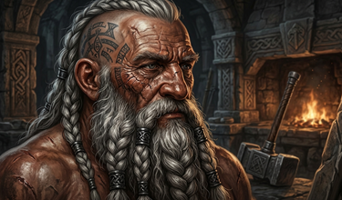
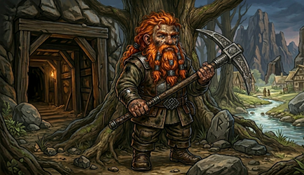
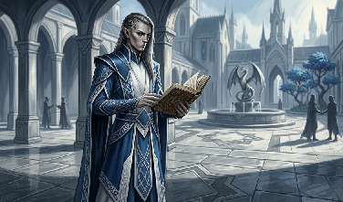
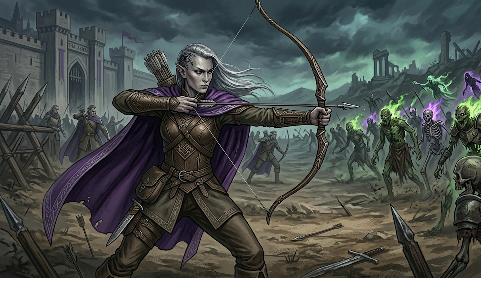
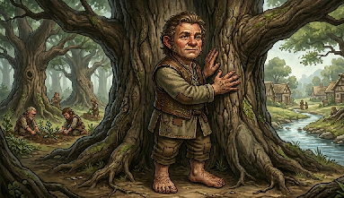
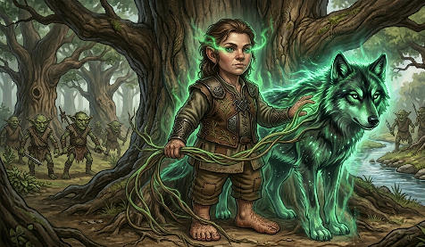
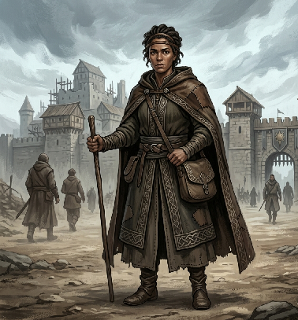

Thrice-Marked is a classless dark fantasy RPG where your character is defined entirely by the choices you make and the marks you carry. No classes. No predetermined path. Every skill sharpened, every rune forged, every desperate bargain struck adds permanent ink to your ledger — and the world will try to mark you three times over before you're done.
"You are not a hero. You are thirty pounds of bone and a few pints of blood wrapped in fragile skin, stepping into a world that actively wants you dead. Measure your worth carefully."
Four peoples walk the unforgiving earth of this world. Your bloodline dictates the architecture of your bones, the swiftness of your stride, and the volume of punishment your flesh can endure before breaking. Yet pedigree is not destiny. A Halfling may wade through slaughter with a veteran's grim efficiency, just as a Dwarf may dissect and master the volatile weave of the arcane. The world of Thrice-Marked is profoundly indifferent to the legacy of your birth. It does not care what you were born to be; it measures you only by the actions you take and the scars you leave behind.

Of all the peoples who walk the surface world, none wear their history as visibly as the Dwarves. It is etched into their posture — a rigid solidity, shoulders squared against a burden unlifted for a millennium. It is carved into their faces, which do not soften with age like those of Men, but weather into harsh, geological topography. They are forged for the deep: dense, corded with muscle born not of mere training, but of ancestral labour within suffocating stone corridors where there is no room to swing, only to drive forward. Their skin bears the permanent kiss of the forge — ruddy copper, ashen grey, or the burnished obsidian of those who have stood too close to the fire. Their hair, when not singed away by the heat, is bound in heavy iron rings, or shorn entirely to make canvas for the ink of clan-runes. They do not wither as shorter-lived peoples do. A Dwarf of a century remains in their prime. Yet, as they pass their second century, a profound stillness settles behind their eyes. The young of other races mistake this for distance; in truth, it is the quiet, crushing gravity of having outlived the very things they built.

Their masterwork is Kel Thurum. Some call it a city, others a kingdom; in truth, it is a philosophy carved in stone. The mountain halls descend in tiers that consumed four generations to hollow, illuminated by geothermal veins the Dwarves harnessed before mankind had learned to name itself. Its civic tradition rests on a single, absolute premise: the city outlasts the individual, and the individual serves the city. Every citizen of Kel Thurum is militia. Every miner has spilled blood. The distinction between soldier and craftsman is a surface-world luxury. A Dwarf of Kel Thurum is both, or they are nothing.
Yet a A festering wound lies beneath this pride. The Birn clan — once gifted deep-delvers of Kel Thurum — pressed into the dark when others declared a seam barren. Exposure to what the oldest texts name Titan-Blood warped them absolutely. Their exile was struck from the annals without ceremony. Today, the shaft they descended is not merely walled off; a permanent, silent militia watches the sealed stone, listening to the rhythmic, heavy scratching from the other side, ensuring the mountain's darkest mistake remains buried.
To know a Dwarf is to understand that you are, at best, a vivid chapter in a very long book. They are not cold toward shorter-lived peoples — they are warm, sometimes fiercely so, with the specific warmth of those who understand that friendship with a Human is inherently temporary and have decided that this makes it more worth having rather than less. A Dwarf who calls you a friend has made a deliberate choice to invest in something they know they will outlive. They do not find this tragic. They find it clarifying.
What they do find difficult — what the long centuries carve into them without mercy — is watching what they build become something they no longer recognize. Kel Thurum has changed four times in living Dwarven memory, not in its stones but in its soul. The city the eldest Dwarves remember is not the city that exists now. They carry those previous versions like additional weight behind their eyes, the accumulated palimpsest of everything the mountain has been, and they do not discuss this with the young, because the young have not earned the grief yet and the telling of it would only confuse them. This is why older Dwarves fall silent at unexpected moments. They are not absent. They are simply standing in two places at once — the present, and one of the many pasts the mountain has already consumed.
[Lore Hook] The vein of Titan-Blood that corrupted the Birn has never been fully mapped. Orthodox scholars claim the seam was permanently sealed upon the clan's exile. The question of whether it remains — and whether it still pulses — is a matter the ruling council has officially closed, yet unofficially bleeds the treasury to answer.
Stone Sense. Always knows the way out of any underground structure regardless of depth or darkness. Cannot be lost underground. Detects structural instability within 20 Ft passively.
Grudge-Forged. Against any creature that has wounded you this encounter, deal +3 wounds on all successful hits.
Iron Constitution. The first Stunned condition each encounter caused by a creature of the same size or smaller is ignored entirely.

The Elves do not claim to be the firstborn of the world. Certainty is a luxury afforded only to the short-lived, who will perish long before they can be corrected. The Elves have walked the earth long enough to carry grief as a second tongue — fluent, unsurprised, and worn with the cold composure of a people who decided, centuries ago, to stop bleeding where others could see.
They are tall and spare, carved with a ruthless, angular economy. They move with the unhurried precision of those who have simply run out of reasons to rush. Their eyes bear colours that do not occur in the natural world — pale amber, necrotic violet, reflective silver — and possess a gaze defined not by distance, but by an abyssal depth. By the time an Elf reaches their fifth century, they have watched their monuments lose their purpose, and everyone they loved become ash and legend.

The city of Thalasien is their masterwork and their burden. It is a settlement of cold, silver beauty, its architecture as calculated as Elven speech — nothing placed carelessly, nothing wasted, every arch and spire carrying the weight of a decision made once and never revisited. Their relationship with the arcane is not spiritual, but clinical. They dissect the weave of magic as a mortician dissects a corpse, operating on the belief that absolute understanding is the only defence against absolute subjugation. This cold arithmetic has made them the most formidable arcane scholars alive. It has also left them profoundly isolated. Scholarship at that depth is a solitary burial, and five centuries of it leaves scars that cannot be translated to fleeting, younger races. The world calls this arrogance. The Elves call it accuracy.
The Blight Elves are a wound in Thalasien's history it does not speak of openly. Cousins shaped by centuries in the Pale Weald's corrupted shadow, they bleed and breathe the arcane rot that Thalasien seeks to sterilize. When a Blight Elf walks through the silver gates of the capital, no alarm is sounded. The streets simply empty. They are permitted to walk the flawless corridors entirely alone — a living ghost of a compromised bloodline, a terminal diagnosis the city refuses to acknowledge — until the crushing, engineered isolation drives them back into the rot where they belong.
An Elf outside Thalasien is a different proposition to an Elf within it. The city produces a specific kind of paralysis in those who remain — the weight of accumulated knowledge pressing down until action becomes almost impossible without adequate justification, and adequate justification requires study, and study takes time, and an Elf has time in quantities that are themselves a problem. The Elves who leave — who choose the short-lived world over the cold perfect silence of the silver city — do so because they have calculated that something out there matters more than the safety of knowing everything before touching anything. This is a minority view in Thalasien. The Elves who hold it are regarded with a mixture of pity and relief.
Outside Thalasien, an Elf is conspicuous not in appearance but in attention. They notice everything, catalogue it, cross-reference it against five centuries of prior cataloguing, and produce assessments that are frequently correct and occasionally incomprehensible because the reasoning passes through seventeen layers of prior context that the shorter-lived person in the conversation does not share. Humans find this exhausting. Dwarves find it useful. Halflings, most Elves report, seem entirely unimpressed, which the Elves find quietly unsettling without being able to articulate why.
Their relationship with death — specifically, the death of companions — is something each Elf manages privately and poorly. They do not grieve the way short-lived peoples grieve, with the raw immediacy of loss. They grieve in the manner of accumulation: the first death hardly registers, the tenth is a weight, the hundredth has become the defining texture of their existence. An old Elf who travels in the company of humans has, mathematically, already watched something very like this specific companion die several times in previous faces. Whether this makes it harder or easier to care, they do not agree on, and they do not discuss it with the people who are currently still alive.
[Lore Hook] The Elves speak of a Golden Age with the sterile neutrality of those who were present for its slaughter. What precisely ended it — what cracked the original foundations of Thalasien — is a question their scholars will answer with academic citations, but never with candour. The wound is old enough to have become ceremonial. That does not mean it has healed.
Centuries of Practice. Permanent +1 bonus to all Awareness tests. Five hundred years of accumulated awareness does not switch off.
The Long Memory. Permanent +1 bonus to all Knowledge tests relating to history, lore, and the arcane.
The Long Inoculation. Five centuries of clinical study of the weave grants you a learned immunity to magical subjugation. Permanent +1 to all resist tests against spells and abilities that attempt to control, command, or compel your mind — including sleep, charm, command, fear-as-compulsion, and similar mind-affecting effects. Damage spells and physical effects are unaffected; this is a defence against being unmade as yourself, not against being unmade as flesh.

The Halflings are the most consistently underestimated people in the known world, a deception they have spent millennia meticulously cultivating. Barely four feet at their apex, they bear the wide, open faces of a people who learned early that perceived harmlessness is an impenetrable armour. Their feet are broad and heavily calloused, preferring the bare earth; soles thick as cured hide, yet sensitive enough to read the ground's tremors as a scholar reads text. Their hands are blunt and dexterous, carrying the inherited knowledge of fingers that know the exact threshold between living soil and dead rot.
Do not mistake their warmth for fragility. They are the first to laugh and the last to break, and the space between those two states is a lethal trap. They are patient in the manner of the deep earth: absolute, silent, and possessing a long, unforgiving memory.

Their bond with the living world is neither faith nor studied discipline; it is an intrinsic, biological anchor. A Halfling who sleeps on bare earth wakes knowing the weather three days hence. One who presses a palm to ancient bark reads the tree's violent history in vibrations through the bone. They do not worship nature; they are continuous with it. The sensitivity of their feet to dead rot is not metaphorical — it is a physiological inheritance, a sensory adaptation developed across generations of walking ground that could no longer feed what it touched. A Halfling barefoot on healthy soil feels the mycorrhizal network beneath it the way a musician feels the pulse of a song through the floor. A Halfling barefoot on blighted ground feels something else entirely. They do not speak of what that feels like, except to say they know it immediately, and that knowing it immediately was, at some point in their history, the difference between life and extinction.
Their homeland is the Warrens of Oakhaven — rolling, unremarkable hills on the surface; an intricate, heavily fortified network of subterranean routes and collapse traps beneath. It is a survival bunker wearing the mask of a meadow, refined over a thousand years into something that does not look built because the Halflings understood, very early, that things which look built get targeted. The deepest warrens predate every other structure in the region by at least three thousand years. The soil of the lowest chambers carries a resonance that Halfling sensitives describe as grief compressed into geology. The elders call it the Old Record.
The Old Record is not a document. It is not kept in scrolls or carved into stone. It is maintained in a specific, ritualized oral tradition carried exclusively by the eldest of each bloodline — a chain of unbroken memory going back to the world before the current Age. What it contains, precisely, the Halflings will not say. But the weight of it is visible in the elders who carry it. They do not age the way the young do — they compact. Something in the long keeping of those memories narrows the eyes and steadies the hands and produces, in the very oldest Halfling elders, a quality of stillness that is not peace but the absence of surprise. They have heard the worst of it. They are no longer startled by what the world is capable of.
What the other races know of Halfling history is entirely what the Halflings have chosen to share, which is precisely nothing of substance. They are welcoming to outsiders, generous at the table, quick to offer what they have — and they will walk you through the Warrens with a guide who knows every safe path through the collapse traps, and you will never suspect the traps are there at all. The Church of the Radiant Compact sent a formal delegation once, with considerable resources, to extract the history the Halfling elders carry. The delegation returned with warm memories of excellent food and no information whatsoever. Three subsequent attempts produced the same result. The Church classified Halflings as a low-priority ecclesiastical concern and moved on. The Halfling elders did not discuss this outcome. They did not need to.
A Halfling who leaves the Warrens carries none of this as visible burden. They are, to all appearances, exactly what they seem: capable, warm, low to the ground, difficult to kill, and disarmingly pleasant to be around. The weight is there — the long memory, the inherited sensitivity, the knowledge of what the Old Record contains — but they wear it the way their feet wear the calloused soles: invisibly, functionally, as the accumulated evidence of everything their line has already survived.
[Lore Hook] The deepest chambers of the Warrens contain markings in a script no living linguist has successfully translated — not because the script is complex, but because every scholar who has been permitted to study it has been escorted out before completing the work, with unfailing courtesy and no explanation. The Halfling elders who oversee these escortings are uniformly apologetic and entirely immovable. One scholar who managed to transcribe a single complete symbol before being shown to the exit spent three years attempting to identify its provenance. It does not match any known writing system. It predates them all.
Beneath Notice. Enemies with 3 or more other valid targets never select you as their primary target unless no other option exists. You are seen, but you are not chosen.
Unreadable Luck. Once per encounter, after seeing any dice result, force a complete reroll of that result. The new outcome stands — better, worse, or unchanged.
Small Target. Ranged attacks against you suffer Disadvantage when you are behind any form of cover, however partial.
Humans are the most populous race in the known world, and from this sheer volume they have forged a sprawling, contradictory mass of civilisations — each fanatically convinced it is the apex of culture. They are physically volatile: compact or towering, pale or dark, shaped by ten thousand years of restless, violent migration across every forgiving and unforgiving terrain. They live barely a century. They build as though they will live forever.
This fleeting mortality is their most dangerous weapon. A Dwarf builds for the mountain. An Elf builds for posterity. A Human builds to outrun the grave. This panic breeds a people who are simultaneously the world's greatest architects and its most reliable source of catastrophic overreach. Human kingdoms are vast and fractious, bound by trade routes that double as battlelines. They are unified primarily by the Church of the Radiant Compact — a faith whose dogma travels faster than any army, and whose institutional relationship with the truth is deliberately unrecorded. The Church maintains its authority through an order of silent inquisitors whose sole purpose is not to execute heretics but to excise the margins of older histories — leaving a pristine, fabricated timeline of human righteousness that the elder races find exhausting and have never managed to halt.

Humans do not specialise; they consume. Every culture they touch is assimilated, violently or quietly, then renamed and claimed as their own invention. The elder races find this relentless tide exhausting, yet none have managed to halt it. Individually, a Human is fragile beside an Elf's precision or a Dwarf's endurance. Collectively, they are a sprawling, unpredictable equation that the rest of the world is still bleeding to solve.
What the other races consistently fail to account for is how little unified Humanity actually is. The Church of the Radiant Compact claims to speak for all Human peoples, and in the settled kingdoms its authority is real enough to be practically indistinguishable from absolute. But the settled kingdoms are not all of Humanity. The merchants of Havenspire operate on entirely different principles — commerce has its own theology, and it cares rather less about sacred lineage than the Church would prefer. The traders of SunsReach exist in the permanent negotiation between the Church's doctrinal reach and the Lizardman Scaled Embassy's practical power, producing a civic culture where pragmatism has become the only working faith. The northern frontier peoples — descendants of the steppe nomads who fled when the coalition fractured, who have spent four centuries building settlements at the edge of Orc territory — bear almost no cultural resemblance to the Church's cathedral cities, and regard the Compact with the specific suspicion reserved for institutions that have never sent help but reliably send tax assessors.
A Human player character carries this contradiction in their bones whether they acknowledge it or not. They are the Church's child, or they are its refugee, or they are the thing the Church has not yet reached and is currently building roads toward. These are not the same person and they do not want the same things, and the fact that every other race in the world treats them as interchangeable is one of the quiet indignities of being Human in a world where you are, nevertheless, the dominant species by raw count.
[Lore Hook] The Church of the Radiant Compact is the closest entity humanity has to a universal authority. It also possesses the most glaring voids in its own historical record — massacres, pacts, and cataclysms meticulously noted in the margins of Elven and Dwarven histories, yet cleanly excised from the Church's vaults. Whether this erasure is born of incompetence or ruthless policy is a question the inquisitors ensure is never asked aloud.
Driven. Once per session, declare a Purpose — a concrete, achievable objective for the session. Gain +1 to all rolls directly tied to achieving it, until the Purpose is fulfilled or explicitly abandoned. A new Purpose cannot be declared until the previous one is resolved.
Adaptable. One skill chosen at character creation costs 5 XP less per rank across its entire compounding chain. The chosen skill must have a base cost of 20 XP or higher for Humans. Chosen once, locked permanently — the choice is the gift; second-guessing is not.
The Relentless. Once per session when reduced to 0 wounds, roll 1d10. On a natural 10 only, survive at 1 wound. No bonuses, modifiers, or rerolls apply — always exactly a 10% chance. Some refuse to fall when the math says they must.
Every survivor in Thrice-Marked is defined by six primary characteristics. These are not mere numbers tallied on parchment — they are the architecture of your soul and the limits of your flesh. They represent how you move through a violently indifferent world. Each characteristic governs a cluster of specific skills and provides passive bonuses to your defense, the wounds you inflict, and your ability to endure.
Characteristics begin at a baseline determined by your bloodline and the bitter experience you invest at your genesis. They grow with agonizing slowness. Elevating a characteristic requires immense, compounding dedication — it is a deliberate forging of the self, never an accident of fate.
| Characteristic | The Measure of Survival | Associated Skills |
|---|---|---|
| Agility | The speed of your blood and the precision of your panic. It dictates how swiftly you cross the battlefield, your capacity to dodge a lethal stroke, and your grace under absolute pressure. Your Agility modifier applies directly to your Defense and all movement-based trials. It governs Tumble — the vital art of rolling clear of devastation and denying the earth the ability to drag you down. | Athletics, Evasion, Quickness, Stealth, Thieving, Tumble |
| Awareness | The instinct to see the knife before it swings. It measures how rapidly you perceive an ambush, read the shifting tide of a skirmish, or hear the whisper of the natural world. Awareness governs the terrifying accuracy of ranged combat, the attunement of Druidism, and the Riposte — the predator's counter-strike that turns an enemy's hesitation into an open artery. Stamina resides here: endurance is simply the awareness of your own breaking point, and the choice to ignore it. | Acute Senses, Druidism, Focus, Precise Strike, Riposte, Stamina |
| Charisma | The sheer weight of your presence. This is not mere charm; it is the force of personality required to command the terrified, negotiate with the hostile, and bend the spirits of the dead to your will. Devotion draws its terrifying miracles directly from Charisma — it is the strength of your covenant with the unseen. It also governs the mending of flesh through sheer, unyielding will. | Authority, Charm, Faith, Inspire, Light-Soul, Mending |
| Intellect | The cold calculation of the mind. Intellect governs memory, the deciphering of ancient traps, and the brutal geometric arithmetic required to safely channel Wizardry without unmaking yourself. It dictates your ability to evaluate an unknown threat, track a bleeding quarry across stone, and read the history of the world in its ruins. | Evaluate, Knowledge, Perception, Read/Write, Tracker, Wizardry |
| Physique | The stubborn density of flesh and bone. Raw physical power, lung capacity, and the sheer volume of punishment your body can absorb before failing. Your Physique modifier applies directly to the wounds you tear into an enemy in melee, and to your Total Wounds — a high Physique hero is a fortress of meat and iron. Masters of Ki draw their miraculous inner power from this bodily perfection. | Fortitude, Hard as Nails, Ki, Rugged, Shieldsman, Strength Conditioning |
| Willpower | The refusal to break. Willpower is the anchor of the soul. It is rolled to resist fear, to survive the agonizing toll of curses, and to force your physical body to keep moving when it has been mathematically destroyed. Shamans draw their terrifying authority from Willpower — it is the force that demands the spirits of the dead listen and obey. Discipline is forged here: the dedication that hardens the mortal vessel to hold unimaginable power without shattering. | Discipline, Iron Will, Resolve, Shaman, Spirit, Survival |
You do not roll dice to randomly determine your worth, nor do you buy your Core Characteristics with a pool of points. In Thrice-Marked, you are what you survive.
Every characteristic begins at a strict baseline. To increase a Core Characteristic by +1 point, you must invest exactly 3 Skill Points into the specific skills governed by that characteristic. If you want your Physique to grow, you must bleed in the training of Fortitude, Hard as Nails, or Strength Conditioning. The flesh only hardens when it is beaten.
Thrice-Marked demands a classless, uncompromising genesis. There are no pre-ordained archetypes or gentle paths laid out for you. You begin as a blank sheet of parchment — a hollow vessel of bone and muscle. Your choices are the only ink available. You forge your survivor from the ash up, spending your experience on the precise tools that will keep you breathing. The steps below dictate how a life is built for this world.
1 The Bloodline (Race)
Select your origin: Dwarf, Elf, Halfling, or Human. Your bloodline sets your foundational physical reality — your height, weight, base movement distance, and the starting capacity of your wounds. It does not chain your potential. A Halfling may become a hardened warlord; a Dwarf may surgically dissect the arcane. Your race is where you begin, not where you must end.
2 The Toll of Experience (Allocate 300 XP)
You awaken with 300 Experience Points (XP) — the ledger of your past survival. This budget is sufficient to forge a competent combatant, but impossible to master everything. Skills are purchased from the Master Skill List, each bearing a compounding cost and a maximum threshold. Characteristics demand an even steeper toll, but provide passive, permanent superiority across all associated trials.
Heed the unwritten laws of survival:
3 The Derived Truths (Calculations)
Once your experience is spent, calculate the physical truth of your capabilities:
4 The Armament
You are granted a starting sum of gold (typically 50–100, dictated by the GM's mercy). Spend it in the Armory on the tools of violence and survival.
5 The Soul of the Survivor
Iron and math do not make a hero. Before the dice roll, you must know what drives the vessel:
Luck: The gods may be absent, but probability still plays favorites. Roll 1d10 at the dawn of each session. This is your Luck pool. You may burn up to half your total Luck (rounded up) on a single test, adding it to the outcome to force a success or stave off a disaster.
The Absolute Failure: If the die lands on a natural 1, Luck cannot twist it into a victory. A natural 1 is a catastrophic truth. However, Luck may still be sacrificed on a 1 to prevent a critical failure — you still miss the strike or ruin the spell, but you avoid severing your own artery in the process.
Fortune (Rerolls): Rerolls are a measure of destiny's favour. Your capacity to alter fate is a read-only manifestation derived directly from your accumulated Fortune points. A reroll is absolute — it obliterates the previous timeline and replaces the die entirely, where Luck merely nudges the math.
Time in the fray is measured in panicked breaths and drawing steel. Every soul is granted a baseline of 1 Action Point (AP) per exchange. This immediate potential can only be expanded through the Quickness skill or grueling, deliberate investment of Experience.
The Reactive Stance: You may declare a Hold upon your turn, sacrificing one or more AP. You must name a specific, impending trigger (e.g., “I hold my shot until the beast clears the tree line”). When destiny trips that wire, you act instantaneously — interrupting the enemy before their action resolves. If the trigger never comes to pass, the held AP bleeds away into nothing.
The Power of 3 (Carrying AP): Patience is a weapon. For every 3 points of base AP you possess, you may carry 1 unspent AP into the subsequent turn. This represents the coil of muscle and mind readying for an overwhelming assault. This carried AP must be explicitly declared as your turn ends, and it is fleeting — it cannot be hoarded beyond the following round.
| Base AP | Max Carry | The Tactical Choice |
|---|---|---|
| 3 AP | 1 | Strike twice now, carry 1 — or unleash all 3 |
| 4 AP | 1 | Spend 3 now, carry 1 |
| 5 AP | 1 | Spend 4 now, carry 1 |
| 6 AP | 2 | Spend 4 now, carry 2 — or unleash 5, carry 1 |
| 9 AP | 3 | The terrifying flexibility of a living legend |
The Iron Constraints:
"Time on the battlefield is measured in panicked breaths and drawn steel. Hesitation is a luxury paid for in blood."
Combat does not wait for the ready. It begins with a sudden, violent clash of intent. Initiative is decided by rolling a single 1d10 against the GM's 1d10. Add your Initiative bonus — derived from your skill investments — to the roll. The fastest player character's total is compared against the fastest adversary's total to determine who acts first.
The Predator's Edge (Surprise): If a party strikes from a hidden position, they seize the momentum, gaining Advantage on the initiative roll. If the ambushing party is entirely undetected before the strike, they gain Advantage (rolling 2d10 and dropping the lowest) alongside a flat +2 bonus to their final result.
During your party's turn, you may traverse the battlefield up to the maximum distance dictated by your bloodline. Movement is fluid — you may execute a partial move, unleash an attack, and then expend the remainder of your distance.
Sprint (1 AP): Push your muscles past their resting limit to move an additional 15 Ft. You may declare this multiple times in a single turn, provided you possess the Action Points to pay the toll.
The Toll of the Earth (Terrain Penalties): The world seeks to drag you down. Deduct distance for the following hazards: Uneasy ground (-5 Ft), Rough terrain (-10 Ft), or Risky environments (-20 Ft).
Patience is a weapon. You may elect to save any number of your available Action Points (AP) to unleash during an enemy's turn.
"The dice govern the chaos of the unknown. Learn to master them, or be broken by them."
To carve a wound into an enemy or to successfully force the arcane weave to obey your command, you roll a single 1d10. You must achieve a total score equal to or higher than the target's Defense value, or the spell's specific Target Number (TN). You apply your natural characteristic modifiers and accrued skill bonuses to this final result.
When the tactical reality of the battlefield shifts, the dice reflect the absolute advantage or the crushing pressure of the moment:
If your final To-Hit roll (1d10 + To-Hit bonuses) meets or shatters the target's Defense and the physical d10 result displayed a natural 10, the strike finds an artery. Roll a second 1d10. No base To-Hit bonuses apply to this secondary roll — only dedicated points in the Precise Strike skill carry over.
The Endless Chain: If the secondary roll is itself a natural 10 and meets or beats Defense, you gain another extra 1d10 wounds and immediately roll again. This chain continues unbroken as long as each successive natural 10 meets Defense. Precise Strike points apply to every roll in this bloody sequence.
If your To-Hit d10 reveals a natural 1, it is an automatic and undeniable miss, regardless of how much skill or arcane power you bring to bear. No further penalties apply, but the failure is absolute.
"The clash of steel and the breaking of bone. In the melee, only the swift and the brutal survive."
If you are not currently fighting for your life against multiple opponents, you may take a clinical moment to find a lethal gap in your target's guard.
Proficiency is the foundation. You must declare a single weapon category (Blunt, Edged, Piercing, Polearm, or Ranged) when investing your first point in the Combat skill. Wielding a weapon you are not formally trained in is a fool's gamble — imposing Disadvantage on both your To-Hit and To-Wound rolls.
The Gateway to Mastery: Advanced specializations are not universal. You may only purchase an advanced mastery (such as Skewer or Linebreaker) if you possess a formal proficiency in the required weapon category and meet the specific characteristic requirements defined in your ledger.
Backstab: Striking an unaware foe from the safety of the shadows deals a catastrophic 1d10 x 2 wounds. This requires a successful Stealth vs Awareness test before the strike.
Outnumbered: Swarming your prey. Outnumbering a single target at least 2-to-1 in melee grants Advantage To-Hit to the attackers.
Ranks: Disciplined formations wield weapons like spears, allowing To-Hit attempts from a 2nd-line rank with absolutely no penalty.
Disengage: Fleeing the fray is rarely safe. Roll 1d10 + Agility Bonus + Skill Points. This total sets the Defense Value (DV) the enemy must beat to land their free strike against your retreating back.
"Death from afar. A steady hand and a cold eye can end a skirmish before the enemy even clears their scabbards."
You take a steadying breath, ignoring the chaos of the fray to align your sights with absolute, lethal intent.
The Law of Iron: Ranged weapons bearing high action costs (2+) represent the grueling mechanics of reloading. A pre-loaded weapon demands only 1 Action to loose its first shot.
You must select a specific ranged proficiency when investing your first point in the Combat (Ranged) skill. Wielding an unfamiliar instrument of war imposes Disadvantage To-Hit.
Concealment: Hiding behind timber or stone grants the target Disadvantage To-Hit against your incoming fire. Attempting to thread a shot to a specific individual within a clustered group imposes a -1 penalty for every obstructing body.
Firing into the Melee: Loosing a projectile into a tangled melee is a desperate gamble. Doing so imposes Disadvantage To-Hit, unless your intended target is at least twice the physical size of your ally. A missed shot under these conditions does not strike your ally; the penalty simply represents the hesitation of attempting a safe aim.
"Magic is the bleeding essence of a ruined world. To channel it is to rewrite the laws of reality, but the weave always demands a toll."
The Target Number (TN) dictates the absolute baseline effort required to manifest a spell, and caps the volume of energy you can safely draw. Every additional 1 AP spent beyond the baseline allows you to select one enhancement from the Overcast Menu.
| Spell/Blessing TN | Base AP Toll | Max d10s Rolled |
|---|---|---|
| TN 1 – 3 | 1 Action Point | D1d10 |
| TN 4 – 6 | 1 Action Point | 1d10 |
| TN 7 – 9 | 2 Action Points | 2d10 |
| TN 10 – 12 | 3 Action Points | 3d10 |
| TN 13 – 15 | 4 Action Points | 4d10 |
| TN 16 – 18 | 5 Action Points | 5d10 |
| TN 19+ | 6 Action Points | 6d10 |
*D1d10: The spell is a fledgling effort. Roll 1d10 at Disadvantage when calculating the final wounds or healing for these low-tier cantrips.
You may burn additional Action Points beyond the base cost to gorge the spell with power. You may select the same enhancement multiple times, capped only by your Max d10s limit.
Primary Characteristics Dictated By Blood: Intellect (Wizardry), Willpower (Shamanism), Charisma (Devotion), or Awareness (Druidism). The Śabda-Axiom stands apart — a lost discipline with no characteristic home in the current age.
Into the Meat-Grinder (Melee): There is no penalty to manifest magic when targeting souls actively engaged in the bloody press of melee.
Resisting the Weave: Targets may attempt to slip the magic (Agility test) or deny its reality (Willpower test) to reduce wounds or evade effects entirely. The Defense Value (DV) they must shatter is exactly equal to your total To-Cast roll.
The Catastrophic Toll (Miscast): A natural 1 on a casting attempt is not merely a failure; it is an Arcane Backlash. If you cannot or will not burn Luck to prevent it, the magic mutates, resulting in a disastrous backfire determined by the Miscast/Wrath table.
Heavy iron and steel actively suffocate the arcane weave. Each classification of armor bears a Tension Value (TN) that brutally penalizes To-Cast rolls.
| Armor | TN | Wizard / Druid / Shaman | Faith (halved) | Śabda-Axiom | Ki |
|---|---|---|---|---|---|
| Furs / Leather / Mithril | 0 | None | None | None | None |
| Studded Leather | 1 | −1 To-Cast | None | None ⚑ | None |
| Chainmail | 2 | −2 To-Cast | −1 To-Cast | −1 To-Cast | None |
| Banded / Splint Mail | 3 | −3 To-Cast | −1 To-Cast | −1 To-Cast | None |
| Plate / Field Plate | 4 | −4 To-Cast | −2 To-Cast | −2 To-Cast | None |
| Full Plate | 5 | −5 To-Cast | −2 To-Cast | −5 To-Cast | None |
Those fluent in the weave can surgically dissect and snuff out enemy magic the moment it is birthed.
Arcane Mastery: When a practitioner claws their way to 15 points in Wizardry, Shamanism, or Faith, the world permanently acknowledges them. You may from that moment forward add your Spirit skill points as a flat, brutal bonus to all wounds caused or flesh healed by your incantations and blessings.
"The battlefield is profoundly cruel. Blood loss, terror, and the breaking of bone will pull you into the dark just as swiftly as an enemy's steel."
The life rushing from an open artery. Lose 1d10 Wounds per stack at the dawn of your turn. Bleeding compounds infinitely — each distinct application adds another 1d10 to the inevitable per-turn loss.
The Clot: Bleeding cannot be ignored; it only ends through deliberate, magical intervention — a Mending skill application, a Faith blessing, a Druidic weave, or an alchemical draught. Natural recovery is a myth here. (The Hard as Nails skill at 6 points grants 'Bloody Minded' — allowing the survivor to ignore the hemorrhage for a single turn).
Lesser Poison: The venom of beasts and cheap alchemy. Lose 1d10 Wounds per turn. At the end of each turn, your body attempts to burn it out; surpass Physique TN 7 + Resist bonus to end the affliction.
Greater Poison: Rare, deliberate, and catastrophic. Lose 2d10 Wounds per turn. The threshold to purge it is a brutal Physique TN 10 + Resist bonus.
Toxins and hemorrhage do not cancel one another out. Poison and Bleeding are distinct realities and stack independently.
A creeping, necrotic rot. Lose 1d10 Wounds per turn. Furthermore, the infection eats away at your foundation, inflicting a -1 penalty to a random characteristic every 24 hours until eradicated. Disease cannot be resisted through sheer grit — only magical healing or dedicated Mending can excise it.
Concussive trauma that scrambles the senses. Each Stunned condition brutally strips 1 Action Point from your available pool for that turn. It stacks absolutely — two conditions rob 2 AP, three rob 3 AP. A survivor reduced to 0 AP is a paralyzed spectator to their own slaughter.
If Stunned is applied to a target already devoid of AP, the debt carries forward, robbing them on the dawn of their next turn.
To fall is to invite the butcher. The earth is an anvil, and while Prone, you are entirely vulnerable:
Forcing yourself off the blood-slicked ground costs 1 AP.
Stripped of steel. You are reduced to unarmed strikes until the weapon is retrieved. Snatching it from the mud costs 1 AP if it lies within 5 Ft.
The Mechanics of Disarmament: Achieved through specific monster abilities, a called shot requiring a Natural 10 at Disadvantage, or the mastery of a 9-point Riposte. Two-handed weapons are heavily anchored; disarming one requires two consecutive natural 10 called strikes.
Pinned / Entangled: You cannot move. All attacks and casts suffer Disadvantage. You must tear free by spending 1 AP and shattering a Physique or Agility TN 8 + Resist bonus.
Frozen: The flesh is entirely locked. No physical actions are possible, only Willpower-based spellcraft or pure mental exertion. Requires external heat to thaw.
The mind breaking under the weight of the unnatural. You must surpass a Willpower TN equal to the creature's Fear Rating (X) + Resist bonus. Failure breaks your nerve entirely — you must burn every available action sprinting directly away from the horror. You cannot strike, cast, or advance until the panic subsides. Re-test at the dawn of each turn.
The lesser terror. The body functions, but the will is fracturing. You suffer a crushing -2 penalty to all rolls and cannot step closer to the source of your dread.
The terror of the dark. All attacks suffer Disadvantage. Your Defense value is stripped of its Agility and Awareness modifiers, leaving you protected only by the static weight of your physical armor's Wound Mitigation.
The mortal frame can only process so much agony before it simply stops responding. If you are ever crushed under the weight of three or more conditions simultaneously — of any kind, including multiples of the same condition, you are Overwhelmed.
While Overwhelmed, your nervous system is in shock. You cannot execute any Reaction Actions — no Dodge, no Parry, no Riposte — until at least one condition is purged. Three Bleed stacks, three Stunned conditions, or any combination that reaches three total — all trigger the Breaking Point equally.
The brink of the void. Triggered the moment your flesh reaches 0 Wounds. If dragged back to 1 Wound, you are barely functional — moving at half speed and requiring a Willpower TN 6 + Resist bonus test just to summon the strength to strike or cast.
"Experience is the finest teacher, though its lessons are exclusively paid for in blood and bone. You do not advance; you merely survive long enough to become something harder to kill."
In Thrice-Marked, power is never granted by arbitrary milestones — it is dragged out of the earth. Characters earn Experience Points (XP) through the sheer grit of surviving trials, executing the profane, and navigating the consequences of their choices. A standard expedition yields between 25 and 75 XP, dictated entirely by the magnitude of the horrors overcome.
True mastery is a grueling, arithmetic climb. Skills operate on a Compounding XP Cost. The first step is cheap; true dedication demands absolute sacrifice.
*Specialized vocations or high-tier Masteries carry steeper base tolls, but mirror this brutal, compounding logic.
Your six Core Characteristics are the architecture of your flesh, and they are not static. For every 3 Skill Points poured into the disciplines belonging to a specific characteristic, that parent stat permanently increases by 1 point. You do not buy raw power with gold or prayers; you build it through relentless, specific trauma.
There are no classes here, only the choices you make to stay alive. Advanced Skills demand a foundation (you cannot master Wizardry without first grasping Knowledge). But you are never chained to your past. A scholar who survives a massacre may spend their next 100 XP entirely on the blade. You are whatever you have bled to become.
"The path you were on is not the path you were meant to walk. What you built can be unmade. What remains is scar tissue — and scar tissue is stronger than what it replaced."
Not every path a survivor walks leads where they intended. A soldier loses their sword arm. A priest loses their faith. A scholar's obsession consumes them. The Skill Atrophy rule gives this terrifying transformation mechanical weight.
The Sacrifice: Atrophy allows you to voluntarily reduce points in a skill you no longer maintain, recovering a fraction of the XP to forge a new identity. This is not a clean reset. It is a sacrifice with a scar. A fighter who lets their Combat skill atrophy from 6 to 2 still carries the memory in their bones; they simply stopped feeding the fire.
When a skill is left to rot, you recover 1 XP for every 3 XP originally spent on the discarded points. The Power of Three governs both the building and the unravelling of mastery.
Example: You rip away 3 points of Stealth (which originally cost 45 XP). Divided by 3, you reclaim 15 XP. The remaining 30 XP are gone — the brutal price of abandoning your training.
The Iron Restrictions:
On the Ledger: Mark the withered skill with a ⚗ symbol.
"A sword can be shattered and a shield can be sundered. Your skills are the only tools the world cannot pry from your hands. Master them, or die holding them."
For an exhaustive breakdown of all primary skills, consult the Primary Skills Compendium.
"You are not given a self. You assemble one from the pieces the world has left within reach — and the moment you build with a piece, that piece becomes you."
Each of the six Core Characteristics holds six skill rows on the Ledger. Three of these are fixed core skills — the bedrock disciplines that define what it means to be Agile, Aware, Charismatic, Intellectual, Physical, or Wilful in this world. The remaining three are swap slots — flexible positions you fill from a defined pool of alternates. The discipline of each characteristic (Devotion, Wizardry, Druidism, Ki, Shaman, or the Śabda-Axiom) appears in its parent characteristic's pool as a default, ready to be claimed by those who would walk the weave. The Power of Three governs not only the building of skills, but the architecture in which they are held: three pillars, three pivots.
No two swap slots in the same characteristic may hold the same skill. The Architecture demands distinction; you are not given two of the same tool.
Before Commitment. While a swap slot holds zero invested points, it may be reassigned freely to any other skill in its pool. This applies during Character Creation and during play. A slot with no investment is a possibility, not yet a commitment.
The First Point Seals the Choice. The moment you invest your first point into a skill — disciplines included — that skill becomes a permanent feature of your character. It cannot be swapped away by ordinary means. What you have chosen to bleed for, you have chosen to become.
There is one path back. There is always one path back.
A Reformation is a narrative event of sufficient weight to remake a portion of the self — a new Oath sworn beneath a witness-stone; a near-death survived and answered for; a faith abandoned and another taken up; a power that claims you against your will and rewrites the shape of your purpose. The GM is the arbiter of when Reformation may occur. It is not a refund mechanism. It is a story the character has lived through.
When Reformation is granted, the player may swap one committed skill — discipline or otherwise — for any valid alternate in that slot's pool. The abandoned skill refunds 1 XP per 3 XP originally invested; the remaining XP is lost. The Power of Three governs both the building and the unmaking. The new skill enters the slot at zero points and must be invested in anew.
On Prerequisites and Vestigial Knowledge. Reformation affects the swapped skill alone. Prerequisite skills purchased to enable the abandoned path — Read/Write learned to study a spellbook, a Knowledge specialisation taken to anchor a discipline — remain on the sheet. Literacy is not a vow that can be unmade; once you have learned to read the old languages, that learning is yours regardless of whether you continue to practice. A Reformed Wizard becomes a literate non-caster. A Reformed Priest still knows the catechisms they no longer believe. The discipline checkbox in the Magic section may remain ticked as a record of what the character once was — a vestigial truth — or the player may untick it as part of the narrative event. The ledger does not enforce either choice; the GM does.
Example: A Devotion-caster suffers Reformation after their god goes silent. They had 3 points invested in Devotion at base cost 15 XP (a total of 90 XP through compounding: 15 + 30 + 45). Reformation refunds 1 XP per 3 invested — 30 XP returned to their pool. The remaining 60 XP is the price of having walked the path. They place the freed slot under Deception and begin again at 0. Their Read/Write point and Knowledge (Religion) entry remain — they still know the scriptures, even if the scriptures no longer answer.
On the Ledger: Swap slots are marked by a clickable skill name. Tap the name to open the picker; the popup lists all valid alternates in the pool, alphabetically, with the current selection marked. While the slot is uncommitted (0 points), the picker is fully active. Once invested, the picker is sealed — only a GM-authorised Reformation can unseal it.
See Skill Atrophy (above) for the related but distinct mechanic of voluntarily reducing a skill in place without changing the slot. Atrophy reshapes investment; Reformation reshapes the self. Note that disciplines cannot be atrophied (the weave does not forget) — Reformation is the only path to release a discipline once it has been committed.
The world speaks in whispers, shifting shadows, and the metallic tang of drawn steel. While others are blind to the subtle warnings of the environment, your instincts are honed to a razor's edge. Roll 1d10 + Skill Points for all sensory detection tests. Every 3 points increases your Awareness characteristic by 1.
The body is the ultimate weapon, forged not in the armory but through exhaustion, sweat, and sheer physical exertion. Each point improves jumping and running distances. Every 3 points increases your Agility characteristic by 1.
Some lead by the grace of kings, but you lead by the absolute weight of your presence. Roll 1d10 + Skill Points + Charisma modifier to set the DV. Targets must roll 1d10 + Willpower to resist — failing means they must comply with your demand. Every 3 points increases your Charisma characteristic by 1.
Natural social influence and magnetism — weaving words and presence into a subtle snare. Roll 1d10 + Skill Points + Charisma modifier to set the DV. The target resists using 1d10 + Awareness (to spot manipulation) or 1d10 + Willpower (to resist emotional sway). Every 3 points increases your Charisma characteristic by 1.
The foundation of the butcher's work. Removes the Disadvantage penalty when using specific melee weapon proficiencies. You must purchase this for each weapon category (Swords, Axes, Hammers, etc.) to attack without penalty.
Advanced, punishing training for fighting from horseback. Enables lance charges while moving and removes the Disadvantage penalty for attacking while stationary on a mount.
The discipline of death from afar. Removes the Disadvantage penalty when using specific ranged weapon proficiencies (Bows, Crossbows, Slings, etc.).
The mind commands and the flesh obeys. Through rigorous meditation and unbreakable habit, you have forged your will into a tool that does not bend when the world pushes back. Every point grants +1 permanent Wound and +1 slot for Blessings, Spells, or Ki powers. Every 3 points increases your Willpower characteristic by 1.
Unlocks the Druidic magical discipline. Each point allows you to learn one spell. Every 3 points increases your Awareness characteristic by 1. At 6 points, you must choose a specialized Path.
Tactical flexibility in combat — the difference between a blade that bites and one that meets empty air. You read where the strike is going before it arrives, slipping just enough to turn lethal into survivable. Your Evasion bonus applies to both Defense and Wound Mitigation, reduced by your armor's Agility penalty.
The trained eye that reads history, craftsmanship, and arcane signatures in every object. Roll 1d10 + Skill Points against the GM's DV to identify items, assess value, and detect enchantments. Every 3 points increases your Intellect characteristic by 1.
Unlocks divine blessings. Each point allows you to learn one blessing. Every 3 points increases your Charisma characteristic by 1.
The projection of cosmic force as spoken frequency — a lost pre-Empire discipline the Church of the Radiant Compact systematically burned. A Speaker cannot be trained; they must find surviving Bija, a living transmission, or contact with something ancient enough to remember when the Śabda was practiced openly. Each point unlocks one Śabda from the Primordial Lexicon. The Śabda-Axiom does not advance any characteristic — like Runecraft, it stands outside the Power of Three entirely. Elves, who regard the Śabda as a crude and primitive precursor that their Wizardry and Druidism have long since surpassed, find the Bija difficult to integrate — not because they lack capability, but because their contempt for the tradition makes it resist them.
The world narrows to a single point. The frantic rhythm of the melee slows as your pulse steadies. You do not merely strike — you choose exactly where the blade will bite. Your total Focus points form a pool you distribute between Potency (flat wound/heal bonus) and Penetration (armor pierce) when you take the Focus action for 1 AP. Every 3 points grants +1 To-Hit whenever you use Focus and increases your Awareness by 1.
Deep wells of physical stamina that most people simply do not possess. Every point grants +10 permanent Wounds. These wounds are added before Size Multipliers are applied. Every 3 points increases your Physique characteristic by 1.
The favour of the gods or the blind chance of the universe. Each point grants one Reroll per game session. Fortune points refresh only at the start of a new adventure.
Some men bleed at the first sign of steel. You simply refuse to acknowledge the pain. Every point grants +2 permanent Wounds and +1 Wound Mitigation against physical attacks for every 2 points invested. Every 3 points increases your Willpower characteristic by 1.
The ability to rally the weary and drag the dying back to the fight. A successful Charisma test grants bonuses to all allies within 25 Ft. Every 3 points increases your Charisma characteristic by 1.
Mental tenacity so dense it borders on the physical. Grants +2 permanent Wounds and allows you to survive for 1 additional turn when reduced to 0 Wounds before collapsing. Every 3 points increases your Willpower characteristic by 1.
Channeling the spirit through the body. Each point unlocks one Ki power. Every 3 points increases your Physique characteristic by 1.
A sword can be shattered and gold can be stolen, but a secret once learned is a weapon that never dulls. Each point represents deep expertise in one specific field — Bestiary, History, Lore, Magic, Races, or Religions. Roll 1d10 + Points in that field against the GM's DV. Every 3 points increases your Intellect characteristic by 1.
The darkness does not merely fear your blade — it fears the light that guides it. Your consecrated spirit burns the corrupt, turning your very presence into a ward against shadow. Often found in the devoted, but the divine light recognises no prerequisite beyond genuine conviction — a warrior who has faced enough darkness develops their own. Every point grants +1 wound against Evil creatures by any means — melee, ranged, or magical. Every 3 points increases your Charisma characteristic by 1.
Field medicine used only outside of melee combat. Allows you to stabilise dying allies, reduce bleeding, and restore wounds through non-magical means. Your base healing value is Mending Points × 2. Every 3 points increases your Charisma characteristic by 1.
The ability to see through lies, illusions, and the subtle currents of magic. Perception serves both the warrior's eye and the caster's instinct.
Deadly accuracy that extends your explosion chain on melee and ranged attacks. Precise Strike points apply to the second and all subsequent explosion rolls — replacing the To-Hit bonus that does not carry over to those rolls.
Mastery of rapid movement — fluid, economical, terrifyingly fast. Every 3 points increases your Action Pool by 1 and your Agility characteristic by 1.
To speak is to ripple the air — to write is to carve your will into history. Each point represents full proficiency in one language: reading, writing, and speaking. This skill is a prerequisite for most advanced academic and magical studies. Every 3 points increases your Intellect characteristic by 1.
When the mind screams to surrender and the soul feels the cold pull of the void, it is Resolve that holds the line. Not training — stubbornness. The bedrock refusal to be moved. Every point grants +1 permanent Wound and provides bonuses to all tests against Fear, Terror, and mind-altering magic. Every 3 points increases your Willpower characteristic by 1.
The first lesson is to not attack. The amateur strikes; the master waits. Every committed blow opens a door, and Riposte is the discipline of seeing the door swing before it has finished moving — and stepping through it with a blade. Where Parry blocks and Dodge avoids, Riposte answers. It is patience taught the language of violence, and once it has been spoken in earnest, the conversation rarely lasts long. Every 3 points increases your Awareness characteristic by 1.
Every 3 points invested permanently increases your Awareness characteristic by 1.
A shield is not merely a wall of wood and iron — it is a weapon that never reloads and a sanctuary that never falters. Each point invested grants +1 Wound Mitigation while a shield is equipped. Every 3 points increases your Physique characteristic by 1.
The body's capacity to keep running when everything else has stopped. Not toughness — endurance. The engine inside that refuses to seize, the lungs that keep drawing air when others have given out. Every point increases your maximum Wound threshold by 1 and extends how long you can function before collapsing. Every 3 points increases your Awareness characteristic by 1.
Your body is not a closed vessel but a cathedral of the soul — open to the restorative currents of the world and resistant to the arcane forces that seek to corrupt it. Every point grants +1 wound whenever healed by any Blessing. Every 3 points increases your Willpower characteristic by 1 and grants +1 Wound Mitigation against Blessings and Spells.
The art of remaining unseen — moving without sound, holding without breath, becoming part of the background before anyone thinks to look. Used to perform Ambushes and Backstabs, dealing ×2 wounds on a confirmed hit from hiding. Every 3 points increases your Agility characteristic by 1.
The art of controlled falling and dynamic evasion — rolling clear of danger before it arrives, landing without losing your footing, and denying the battlefield the satisfaction of putting you on the ground. Where Evasion avoids a targeted strike, Tumble handles the chaos: explosions, knockbacks, grapples, and every force that tries to rob you of your position.
Every 3 points invested permanently increases your Agility characteristic by 1.
Physical power training that translates raw strength directly into lethality. Every point grants +2 permanent Wounds. Every 3 points increases your Physique characteristic by 1 and grants +2 bonus to all melee weapon wound rolls.
Whether it is the snap of a twig, a tuft of fur on a thorn, or the faint scent of woodsmoke on the wind — the world is a book that most people have forgotten how to read. Roll 1d10 + Tracker Points + Awareness modifier against the GM's DV to follow a trail. Every 3 points increases your Awareness characteristic by 1.
The wilderness does not care for your titles. You have lived where others perished — wringing water from stone and warmth from wind. Every point grants +1 permanent Wound and resistance to natural extremes. Every 3 points increases your Willpower characteristic by 1 and grants +1 Wound Mitigation against magical damage.
Locks are puzzles waiting for a solution and pockets are temporary storage for gold that hasn't found a better home. Roll 1d10 + Thieving Points + Agility modifier for all pick lock, pick pocket, disarm trap, and sleight of hand tests. Every 3 points increases your Agility characteristic by 1.
The study of the arcane threads. Each point allows you to learn one spell. Every 3 points increases your Intellect characteristic by 1.
Advanced Vocations are the pinnacle of martial, magical, and tactical mastery. This compendium lists all 30 masteries in alphabetical order for quick reference during character advancement. For full skill details, specializations, and build combinations, consult the Advanced Vocations Compendium or the Build Guide & Mechanics Reference.
Passive: You no longer need to spend 1 AP on your turn to enter a Reactive Stance for Counter-Casting. You may attempt a Counter-Cast at any time as long as you have the required AP to match the incoming spell.
On a successful Counter-Cast, you immediately regain 1 Spirit Point, or you may add the neutralized spell's TN value to the wounds of your next offensive cast.
Passive: Negate outnumbering/flanking bonuses from up to 3 enemies.
Lose disadvantage on melee attacks, gain +1d10 wounds, lose 1 Defense.
⚔ The Berserker Specialized replaces the former Enraged primary skill — fury-driven bonus attacks are now accessed through this mastery.
Mechanic: When hit, test to completely mitigate wounds from an opponent of equal size or smaller.
Anchor in place (0 Move). You and one adjacent ally gain +3 Wound Mitigation against physical attacks.
Passive: +1 Wound Bonus when fighting 2+ enemies.
One To-Hit roll with Disadvantage applied to EVERY enemy in reach. Deals Normal + (2 x Physique).
Passive: +1 WM (All sources), +1 Healing.
Cause Fear (5) to Evil. Add Light Soul to wounds against Evil.
Mechanic: Grant ally 1 AP immediately + Charisma Bonus to next roll.
Target removes 1 Stunned or Fear. If at 0 Wounds, revives and heals 1d10 + (2 x Charisma).
Passive: +3 Spell Wound Bonus.
Spell wounds multiplied by 2. Crit (10): Rolls an extra d10; this chains on subsequent 10s up to a maximum of 3 additional d10s.
Mechanic: Attempt opposed Agility/Melee roll to mitigate all wounds from an equal or smaller opponent.
Opponent strikes themselves for half wounds.
Mechanic: Change spell target before wound roll.
Divide Base wounds/healing among multiple targets; apply static bonuses fully to each.
Mechanic: TN 7 or less heals Normal + Faith.
Heals Normal + (2 x Faith) + 1d10. Removes 1 Bleed.
Mechanic: Declare after a hit but before wounds. Negates the attack entirely.
Disengage from all melee, negating all attacks of opportunity.
Passive: +1 Melee Wound Bonus.
Target gains 0 WM from worn armor. Natural armor reduced heavily.
Passive: +1 Ranged Wound Bonus. Bolts ignore 2 points of Armor Mitigation.
Gain Advantage To-Hit. Ignores ALL worn armor.
Passive: +2 Melee Wound Bonus.
Target suffers 2 Stunned. 2H: Normal + (4 x Phys) + 2d10.
Passive: +1 Melee Wound Bonus.
Wounds = Normal + 2d10. 2H causes 3 Bleeding.
Mechanic: Convert offensive TN 7 spell to heal ally for half damage.
Cast TN 10 spell on enemy (Wounds) and ally (Half Healing).
Passive: +2 Ranged Wound Bonus.
Wounds = Normal + Agility + (2 x Awareness) + 1d10 + 1 Bleeding.
Passive: Advantage on non-combat Thievery tests.
Flash-disable trap/lock mid-combat, or apply poison.
Passive: +1 Melee Wound Bonus.
Force Awareness test; failure makes target Disordered (next hit is Backstab).
Passive: +1 Ranged Wound Bonus. Ignore melee/crowd penalties.
Gain Advantage. Wounds = Normal + 2d10 + (3 x Awareness).
Passive: +2 Melee Wound Bonus (Stealth/Flanking only).
Target must pass Willpower DV 12 or suffer 4d10 + melee wound bonus wounds as the strike finds every vulnerable point simultaneously. On a success they take normal wounds only.
Mechanic: Shift into Predator, Guardian, or Skybound. Costs 1 Spirit/turn.
Add trait: Toxic Adaptation, Iron Chitin, or Elemental Resonance.
Passive: +3 Druid Healing.
The Weald does not release its own to death without a fight. When the Druid is reduced to 0 wounds, they may spend 5 AP — the earth, stone, root, and breath of the world forcing them back into the living. The Druid returns with wounds equal to their Willpower modifier. Immediately upon return, a pulse of raw life energy radiates outward — all allies within 30 Ft are healed for 1d10 + Druidism skill points wounds as the overflow of the Weald's reclamation washes over them. This healing is cumulative with all other active healing effects. Once per day — the earth gives this gift once, and once only.
Mechanic: Requires 25ft momentum. Wounds = 1d10 + (2 x Physique) + unused Shieldsman pts.
Target takes 2 Stunned. Wounds = 2d10 + (4 x Physique).
Passive: +1 to Willpower/Fear defense.
Gain Extra WM = (2 x Willpower) + Physique. Immune to Stun/Prone.
Mechanic: Dent shield (-1 WM) or damage weapon (-2 Wounds) until repaired.
Armor WM halved. Crit (10): Item destroyed.
Passive: +1 Melee Wound Bonus.
Wounds = Normal + 2d10 + (2 x Agility). Muted, 1 Stunned.
Passive: +2 Ranged Wound Bonus. Causes 1 Stunned on hit.
Must be within 5ft. Deals Normal + 3d10 + (2 x Awareness) + 2 Bleeding.
Mechanic: Wounds = Normal + 1d10 + Physique. Target takes 2 Stunned.
Wounds = Normal + 2d10 + (2 x Awareness). 3 Stunned, Prone.
Passive: +3 Wound Mitigation against all sources.
Mitigate wounds by Hard as Nails + Iron Will + Willpower.
These skills are available to players who choose to replace one of their characteristic's two swappable skill slots. Each slot defaults to the existing skill listed in the ledger — these are the alternatives. A character who swaps a slot commits to that choice; points invested in the previous skill are not refunded.
The body as instrument — trained to move through space with precision that looks effortless and is anything but. Acrobatics covers the gap between what the battlefield gives you and where you need to be: vaulting obstacles, running across surfaces that shouldn't hold weight, threading gaps that shouldn't fit a person. Roll 1d10 + Acrobatics Points + Agility modifier against the GM's DV for all tests involving dynamic movement, balance, and precision athletics. Every 3 points increases your Agility characteristic by 1.
Every 3 points invested permanently increases your Agility characteristic by 1.
Identity is a costume worn over a skeleton, and you have learned to change costumes faster than most people change their minds. Disguise is not merely prosthetics and dye — it is posture, gait, voice, and the specific quality of confidence that makes an assumed identity feel inevitable rather than performed. Roll 1d10 + Disguise Points + Agility modifier against the target's Awareness when maintaining a disguise under scrutiny. Every 3 points increases your Agility characteristic by 1.
Every 3 points invested permanently increases your Agility characteristic by 1.
The study of restraint — not how to apply it, but how to refuse it. Manacles, rope, grapples, nets, magical binding, and the grip of something three times your size: none of these are permanent if you know where the give is. Escapology is half anatomy, half engineering, and half the cold certainty that you will find the weakness before your captor realises you're looking. Roll 1d10 + Escapology Points + Agility modifier for all escape, slip, and counter-grapple attempts. Every 3 points increases your Agility characteristic by 1.
Every 3 points invested permanently increases your Agility characteristic by 1.
The hand is faster than the eye, and the eye sees what it expects to see. Sleight of Hand is the discipline of misdirection — making the audience look at the wrong thing while the interesting event happens somewhere they aren't watching. In combat, it translates to concealed weapons, palmed items, and the ability to introduce objects into spaces that should be impossible to reach undetected. Roll 1d10 + Sleight of Hand Points + Agility modifier against the target's Awareness for all concealment, palming, and misdirection tests. Every 3 points increases your Agility characteristic by 1.
Every 3 points invested permanently increases your Agility characteristic by 1.
Something moves wrong in the corner of your vision. The silence is the wrong quality. The air smells like iron half a second before anyone has bled. Danger Sense is not prophecy — it is the body's accumulated experience compressed into a signal faster than conscious processing, and the discipline of trusting it. Every 3 points increases your Awareness characteristic by 1.
Every 3 points invested permanently increases your Awareness characteristic by 1.
Mouths are a second ledger kept by the inattentive. What people say aloud is the version they've decided to share — what their lips form when they think no one is watching is closer to the truth. Lip Reading extends your intelligence range across a room without requiring proximity, letting you attend two conversations simultaneously: the one happening in front of you and the one happening thirty feet away. Roll 1d10 + Lip Reading Points + Awareness modifier against DV for unclear or fast speech. Every 3 points increases your Awareness characteristic by 1.
Every 3 points invested permanently increases your Awareness characteristic by 1.
The ability to extract information faster than it can be hidden. A document left on a desk, a letter being sealed, a ledger opened during a tense negotiation: Swift Read is the skill of consuming text at a rate that turns a glance into a complete briefing. In a world where information is power and most powerful people do not expect to be read in real time, this is a weapon that never runs out of ammunition. Every 3 points increases your Awareness characteristic by 1.
Every 3 points invested permanently increases your Awareness characteristic by 1.
The lie that lands is the one that contains more truth than the target can immediately verify. Deception is not the art of fabrication — fabrications unravel under pressure. It is the art of constructing narratives that feel real because they are adjacent to something real, told by someone who believes them in the moment. Roll 1d10 + Deception Points + Charisma modifier against the target's Awareness for all deceptive social interactions. Every 3 points increases your Charisma characteristic by 1.
Every 3 points invested permanently increases your Charisma characteristic by 1.
Fear is the oldest currency and you have learned to spend it efficiently. Intimidation is not rage, not size, and not the volume of your voice — it is the specific quality of presence that makes a target run an internal calculation and conclude the math does not favour them. The most effective practitioners barely raise their voice. Roll 1d10 + Intimidation Points + Charisma modifier against the target's Willpower for all intimidation attempts. Every 3 points increases your Charisma characteristic by 1.
Every 3 points invested permanently increases your Charisma characteristic by 1.
The crowd is a single creature with a hundred eyes and Performance is the art of feeding it exactly what it wants before it knows what that is. Music, theatre, oratory, storytelling, religious ceremony, political address — the mechanism is the same in all of them: a calibrated emotional transfer from practitioner to audience that leaves the audience feeling what you intended rather than what they arrived with. Roll 1d10 + Performance Points + Charisma modifier against the GM's DV for all performance and oratory tests. Every 3 points increases your Charisma characteristic by 1.
Every 3 points invested permanently increases your Charisma characteristic by 1.
Desire is the oldest lever and Seduction is the art of finding it in people who believe they do not have one. This is not primarily a romantic skill — it is the skill of making a target want to give you what you need because giving it to you is the most appealing option available. A merchant seduced toward a bad deal. A guard seduced toward inattention. A commander seduced toward confidence. The application is negotiation, intelligence gathering, distraction, and access. Roll 1d10 + Seduction Points + Charisma modifier against the target's Willpower. Every 3 points increases your Charisma characteristic by 1.
Every 3 points invested permanently increases your Charisma characteristic by 1.
Chemistry applied to lethality, healing, and the grey space between them. Alchemy is not magic — it does not require a tradition or a mark or the Church's tolerance. It requires access to materials, a stable workspace, and the specific kind of patience that does not flinch when something explodes. Roll 1d10 + Alchemy Points + Intellect modifier against the formula's DV when crafting compounds. Every 3 points increases your Intellect characteristic by 1.
Every 3 points invested permanently increases your Intellect characteristic by 1.
Structures do not fail at random — they fail at precisely the point where load exceeds design, and the engineer is the person who can read that point in advance. Engineering covers construction, demolition, trap design, siege mechanics, and the structural analysis of anything built by human or inhuman hands. Roll 1d10 + Engineering Points + Intellect modifier against DV for all construction and analysis tests. Every 3 points increases your Intellect characteristic by 1.
Every 3 points invested permanently increases your Intellect characteristic by 1.
The body is a system, and systems have known failure modes. Medicine is the empirical discipline of understanding those failure modes well enough to interrupt them — setting bones, managing infection, identifying disease, and extracting foreign objects from places they were never supposed to be. Where Mending is field instinct, Medicine is methodology. Roll 1d10 + Medicine Points + Intellect modifier against DV for all medical diagnosis and treatment tests. Every 3 points increases your Intellect characteristic by 1.
Every 3 points invested permanently increases your Intellect characteristic by 1.
The world has a geometry if you know how to read it — stars, currents, prevailing winds, the angle of shadows, the way moss grows and rivers cut. Navigation is the translation of environment into position, and position into direction. At its highest levels it extends beyond physical space into the reading of political geography, trade routes, and the kind of situational awareness that tells you which direction threat comes from before it arrives. Roll 1d10 + Navigation Points + Intellect modifier against DV for all orientation, charting, and route-planning tests. Every 3 points increases your Intellect characteristic by 1.
Every 3 points invested permanently increases your Intellect characteristic by 1.
The oldest form of combat — no weapons, no rules, and the deeply practical understanding that most fights happen in spaces too small for a sword. Brawling is the skill of making your body itself into a weapon: elbows, knees, headbutts, improvised grips, and the specific economy of violence that operates in taverns, alleys, and anywhere else that combat becomes immediate and close. Every 3 points increases your Physique characteristic by 1.
Every 3 points invested permanently increases your Physique characteristic by 1.
Gravity is the most democratic of opponents. Climbing is the art of refusing to acknowledge its authority over you — reading surfaces for purchase, distributing weight across holds that would crumble under anything but expert technique, and covering vertical distance that tactical planning always fails to account for. Roll 1d10 + Climbing Points + Physique modifier against DV for difficult ascents. Every 3 points increases your Physique characteristic by 1.
Every 3 points invested permanently increases your Physique characteristic by 1.
Every point grants +1 permanent Wound. The body that doesn't stop is the body that wins. Endurance is not strength — it is the systematic refusal of the nervous system to register that stopping is an option. The practitioner runs further, fights longer, absorbs more, and continues operating in conditions that have already rendered everyone else non-functional. Every 3 points increases your Physique characteristic by 1.
Every 3 points invested permanently increases your Physique characteristic by 1.
Water is not a barrier — it is a medium, and those who have trained in it treat it accordingly. Swimming covers open water, rough seas, strong currents, underwater navigation, and the specific combat applications of a three-dimensional space where most opponents have stopped thinking tactically. Roll 1d10 + Swimming Points + Physique modifier against DV for difficult water conditions. Every 3 points increases your Physique characteristic by 1.
Every 3 points invested permanently increases your Physique characteristic by 1.
Every point grants +1 permanent Wound. The mind that does not panic is the mind that survives. Meditation is the systematic discipline of the inner space — controlling the response to fear, pain, shock, and the accumulated weight of conditions that would break an untrained mind. It does not prevent the damage; it determines what the damage means. Every 3 points increases your Willpower characteristic by 1.
Every 3 points invested permanently increases your Willpower characteristic by 1.
Every point grants +1 permanent Wound. An oath is an anchor, and an anchor holds against current. Oathkeeper is the discipline of binding oneself to a stated commitment — a pledge, a vow, a covenant — and deriving mechanical power from the act of maintaining it. The character who has sworn does not fight the same fight as the character who merely intends. Every 3 points increases your Willpower characteristic by 1.
Every 3 points invested permanently increases your Willpower characteristic by 1.
Every point grants +2 permanent Wounds. Pain is data. Pain Tolerance is the training that separates the signal from the noise — allowing the body to continue functioning under conditions where the nervous system's interrupts have fired and most organisms have stopped. This is not numbness; it is the precise calibration of what requires stopping for and what does not. Every 3 points increases your Physique characteristic by 1.
Every 3 points invested permanently increases your Physique characteristic by 1.
Every point grants +1 permanent Wound. The trained mind holds more than it needs for ordinary circumstances — a reservoir that exists precisely for the moment when ordinary circumstances have ended and something beyond ordinary reserves is required. Willpower Reserve does not increase power in normal conditions. It determines how much is left when everything else has run out. Every 3 points increases your Willpower characteristic by 1.
Every 3 points invested permanently increases your Willpower characteristic by 1.
"Steel is only as strong as the will of the one who wears it. Choose your burden wisely, for in the end, it will not save you."
Defense (Def) is the static threshold an attacker must meet or exceed to land a blow. Wound Mitigation (W. Mit) is the cold reality of physics — the exact volume of butchery the material absorbs before the remainder reaches your flesh.
| Type | Def | W. Mit | The Toll of Iron (Penalties) |
|---|---|---|---|
| Animal Furs | 0 | 1 | None |
| Cloth / Padded | 1 | 1 | -1 Melee To-Hit |
| Leather | 2 | 2 | -1 Agility |
| Studded Leather | 2 | 3 | -1 Agility, +1 TN to Cast |
| Chainmail | 3 | 4 | -2 Agility, +2 TN to Cast, -5 Ft Move |
| Banded / Splint Mail | 3 | 5 | -2 Agility, -1 Awareness, +3 TN to Cast, -10 Ft Move |
| Field Plate | 4 | 6 | -3 Agility, -2 Awareness, +4 TN to Cast, -15 Ft Move |
| Full Plate | 5 | 8 | -3 Agl, -3 Awa, +5 TN to Cast, -15 Ft Move, -2 Ranged To-Hit |
| Mithril | 4 | 5 | None — Absolute arcane and physical perfection |
| Mithril (Elven) | 4 | 6 | None — Elven-forged, lighter and denser than standard mithril |
| Shield Class | Def | W. Mit | The Toll of Iron (Penalties) |
|---|---|---|---|
| Light / Buckler | +1 | +1 | Occupies 1 Hand |
| Heater / Heavy | +2 | +2 | Occupies 1 Hand, Req: Physique 4, -1 Agility |
The Law of Iron: Any confirmed strike in melee deals an absolute minimum of 1 wound, regardless of the target's mitigation. The kinetic force of a blow cannot be entirely ignored.
| Class | Instruments of Violence | To-Hit | Wounds | Special Traits |
|---|---|---|---|---|
| Blunt | Mace, Warhammer, Staff | Normal | 1d10 | Ignores 1 point of Wound Mitigation |
| Edged | Sword, Axe, Claymore | Normal | 1d10 | — |
| 2-Handed | Greatsword, Greataxe, Maul, Halberd | Normal | 1d10 | Doubles Physique modifier on wounds. Costs 2 AP to strike. |
| Piercing | Dagger, Rapier, Spear | Normal | 1d10 | Advantage To-Wound vs Leather/Cloth |
| Finesse | Dagger, Rapier, Shortsword, Whip | Normal | 1d10 | Wound modifier uses Agility + Physique/3 instead of raw Physique |
| Polearm | Halberd, Pike, Glaive | Normal | 1d10 | Ranks — permits striking safely from the 2nd line. 2 AP. |
| Lance | Lance | Normal | 1d10 | Mounted only. Wound modifier uses Physique ×3. 2 AP. |
| Flail | Flail, Morningstar | Normal | 1d10 | Adds Awareness modifier to wounds on top of Physique modifier. |
| Unarmed | Fists, Feet | Normal | 1d10 | Disadvantage To-Wound vs Leather or heavier. |
| Weapon | AP Cost | Wounds | Effective Range | Special Traits |
|---|---|---|---|---|
| Shortbow | 1 | 1d10 | 80 Ft | Quickload. 1 AP to fire. |
| Longbow / Elven Bow | 2 | 1d10 | 400 Ft | Recurve: reduces target's armor mitigation by half up to half range. |
| Hand Crossbow | 1 | 1d10 | 50 Ft | Concealable. One-handed. |
| Crossbow (Standard) | 2 | 2d10 | 300 Ft | Piercing — ignores all armor mitigation at half range. |
| Heavy Crossbow | 3 | 3d10 | 300 Ft | Piercing — ignores all mitigation (except magical). Natural 10 To-Hit inflicts Bleeding. |
| Pistol | 2 | 2d10 | 75 Ft | Piercing — ignores 4 points of Wound Mitigation. |
| Rifle | 3 | 3d10 | 400 Ft | Piercing — ignores all armor mitigation at standard range. |
| Blunderbuss | 3 | 2d10 | 60 Ft (15 Ft AoE) | AoE cone. All targets in 15 Ft AoE: DV10 Physique or suffer Stunned. |
| Throwing (Knife / Axe) | 1 | 1d10 | 80 Ft | Brutal Arc — add full Physique modifier to wounds. |
| Javelin | 1 | 1d10 | 80 Ft | Brutal Arc — add full Physique modifier to wounds. |
| Dart / Sling | 1 | 1d10 | 30–80 Ft | Concealable. Low profile — rarely provokes attention. |
| Whip / Lasso | 1 | — | 15 Ft | Entangling — on failed Agility test, target is Bound. Attacker chooses which limb is snared. |
Coin is minted by those who survive long enough to mint it. Three denominations circulate across the known world — though in the deep wilds and ruined frontier, a sharp blade and a full stomach will buy more than any coin.
Crown (Gold) — The rarest denomination. Minted by surviving kingdoms and city-states, a Crown carries the authority of whoever stamped it. Most common folk never hold one. 1 Crown = 10 Marks.
Mark (Silver) — The backbone of commerce. Soldiers, merchants, and skilled tradespeople deal in Marks. A working wage is 1–2 Marks per day. 1 Mark = 10 Bits.
Bit (Copper) — The coin of survival. A meal, a night's shelter, a candle, a lie. 100 Bits = 1 Crown.
In uncivilized regions, coin may be refused entirely. Barter in goods, labor, or information is equally valid — and often more trusted.
| Armor | Def | W. Mit | Cost | Notes |
|---|---|---|---|---|
| Animal Furs | 0 | 1 | 5 Bits | Scavenged or hunted. No craftsman required. |
| Cloth / Padded | 1 | 1 | 3 Marks | Layered fabric, easily sourced. |
| Leather | 2 | 2 | 8 Marks | Standard adventurer's protection. |
| Studded Leather | 2 | 3 | 15 Marks | Reinforced with iron rivets. |
| Chainmail | 3 | 4 | 3 Crowns | Thousands of hand-linked rings. Weeks of labor. |
| Banded / Splint Mail | 3 | 5 | 6 Crowns | Rigid bands over chainmail backing. |
| Field Plate | 4 | 6 | 36 Crowns | Custom fitted. A knight's investment. |
| Full Plate | 5 | 8 | 60 Crowns | Master-forged, fitted to the wearer. Rare outside standing armies. |
| Mithril | 4 | 5 | Not for sale | Treasure-tier only. Found, stolen, or inherited. |
| Mithril (Elven) | 4 | 6 | Not for sale | Elven-forged. Does not change hands willingly. |
| Shield | Def | W. Mit | Cost | Notes |
|---|---|---|---|---|
| Light / Buckler | +1 | +1 | 4 Marks | Wood or light iron facing. Common militia issue. |
| Heater / Heavy | +2 | +2 | 1 Crown 5 Marks | Reinforced steel. Requires Physique 4. |
| Weapon Class | Examples | Cost | Notes |
|---|---|---|---|
| Unarmed | Fists, Feet | — | Free. The body is the weapon. |
| Blunt | Mace, Warhammer, Staff | 5–8 Marks | Staffs are cheapest. Warhammers command a premium. |
| Edged | Sword, Axe, Claymore | 6–12 Marks | Hand axes are cheap. A quality sword is a significant purchase. |
| 2-Handed | Greatsword, Greataxe, Maul, Halberd | 2–5 Crowns | Mass and craftsmanship demand a higher price. |
| Piercing | Dagger, Rapier, Spear | 2–10 Marks | Daggers are nearly free. Rapiers require a skilled smith. |
| Finesse | Shortsword, Whip, Rapier | 8–15 Marks | Balance and precision cost more than raw iron. |
| Polearm | Halberd, Pike, Glaive | 1–2 Crowns | Length and head complexity drive cost. |
| Lance | Lance | 1 Crown | Purpose-built. Useless without a mount. |
| Flail | Flail, Morningstar | 8–14 Marks | Chain and weighted head. Specialist smithing. |
| Weapon | Cost | Notes |
|---|---|---|
| Shortbow | 4 Marks | Simple stave and string. Any fletcher can make one. |
| Longbow / Elven Bow | 12 Marks / 10 Crowns | Longbow demands seasoned wood. Elven Bow is irreplaceable. |
| Hand Crossbow | 10 Marks | Compact mechanism. Favoured by assassins and scouts. |
| Crossbow (Standard) | 1 Crown 5 Marks | Steel prod and windlass. Standard military issue. |
| Heavy Crossbow | 7 Crowns | Siege-grade. Requires a crank to reload. |
| Pistol | 3 Crowns | Rare outside cities. Powder and shot sold separately. |
| Rifle | 15 Crowns | Master-crafted. Finding a gunsmith is half the challenge. |
| Blunderbuss | 8 Crowns | Short-range devastation. Powder-hungry. |
| Throwing Knife / Axe | 2–4 Marks | Sold in sets of 3. |
| Javelin | 2 Marks | Sold in sets of 3. Lost on use. |
| Dart / Sling | 5 Bits / 1 Mark | Darts sold in sets of 10. Sling pouch included. |
| Whip / Lasso | 3 Marks | Leather-braided. Favoured by those who prefer prisoners over corpses. |
| Item | Cost | Notes |
|---|---|---|
| Arrows (20) | 1 Mark | Standard fletched. Recoverable after combat. |
| Crossbow Bolts (20) | 2 Marks | Heavier stock than arrows. Less recoverable. |
| Black Powder (10 charges) | 2 Marks | Keep dry. An open flame is a death sentence. |
| Pistol Shot (10) | 1 Mark | Lead balls, pre-measured powder cartridges. |
| Rifle Shot (10) | 2 Marks | Heavier calibre. Specialist supply. |
| Item | Cost | Notes |
|---|---|---|
| Torch (×5) | 3 Bits | Burns 1 hour each. |
| Lantern | 4 Marks | 20 Ft radius. Requires oil. |
| Oil Flask (×5) | 2 Marks | 1 hour burn per flask. Flammable weapon on a nat 10. |
| Rope (50 Ft) | 1 Mark | Hemp. Reliable until it isn't. |
| Grappling Hook | 3 Marks | Iron. Use with rope. |
| Backpack | 2 Marks | Holds reasonable adventuring gear. |
| Bedroll | 1 Mark | Thin but better than stone. |
| Rations (1 week) | 3 Marks | Dried meat, hard tack, salt. |
| Waterskin | 5 Bits | Holds 1 day of water. |
| Tinderbox | 4 Bits | Flint, steel, and dry tinder. |
| Crowbar | 3 Marks | Iron. +2 to Physique tests for forcing doors or locks. |
| Lockpicks (set) | 5 Marks | Fine steel. Illegal in most settlements. |
| Thieves' Tools | 8 Marks | Full set including lockpicks, mirror, wire. |
| Healer's Kit (10 uses) | 5 Marks | Bandages, needle, thread, salve. Allows a Physique stabilisation test on a downed ally. |
| Poison (1 dose) | 4 Marks | Applied to blade. Inflicts 1 Bleeding per turn for 3 turns on a hit. Illegal. |
| Antidote (1 dose) | 3 Marks | Clears 1 Poison condition immediately. |
| Tent (2-person) | 4 Marks | Oilskin canvas. Folds into a backpack. |
| Horse (Riding) | 5 Crowns | Trained to carry. Not trained for war. |
| Horse (Warhorse) | 15 Crowns | Trained for combat. Rare. Prideful. |
| Mule / Pack Animal | 1 Crown 5 Marks | Reliable carrier. Stubborn under pressure. |
| Common Clothing | 5 Bits | Rough-spun. Functional. |
| Traveller's Clothing | 3 Marks | Durable, layered, weatherproof. |
| Noble's Clothing | 1–5 Crowns | Fine fabric, tailored. Opens doors other clothing closes. |
| Spellbook (blank) | 3 Crowns | Vellum pages, leather-bound, arcane ink. Required for Wizardry study. |
| Map (regional) | 5 Marks | Accuracy varies. Treat as a guide, not a guarantee. |
| Inn (1 night, common) | 3 Bits | Straw pallet, shared room, thin soup. |
| Inn (1 night, private) | 1 Mark | A door that locks. A bed that doesn't move. |
| Meal (common) | 1 Bit | Stew, bread, water. |
| Meal (quality) | 5 Bits | Hot, varied, and served without attitude. |
| Ale / Wine (flagon) | 2 Bits | Enough to forget one thing. |
"Forged in forgotten eras, bought with blood."
Powerful enchantments warp the very weave of reality. Magic items, legendary relics, and cursed artifacts are catalogued in the dedicated Armory compendium.
⚔ Open Relics & Artifacts"Gold doesn't buy survival. It buys the tools that give survival a fighting chance."
Three denominations move through the world's markets. The Church of the Radiant Compact mints the Crown; the merchant cities mint the Mark; the northern frontier clans stamp their own Iron Pennies from recycled weapons. All three are accepted in the settled kingdoms at the rates below. Outside them, barter is law.
| Coin | Common Name | Conversion | What It Buys |
|---|---|---|---|
| Iron Penny | Penny, Bit, Scratch | 10 Pennies = 1 Mark | A loaf of bread, a night's rough shelter, a single torch |
| Silver Mark | Mark, Blade, Piece | 10 Marks = 1 Crown | A week's food, a night at a decent inn, a common tool |
| Gold Crown | Crown, Gold, Sovereign | Base unit (100 Pennies) | A month's wages, a horse, a suit of leather armour |
Starting gold (50–100 Crown) represents a competent professional's savings — enough to equip a fighter, not enough to buy land. Prices below are in Gold Crowns unless marked with p (Pennies) or m (Marks).
| Armour | Price | Notes |
|---|---|---|
| Animal Furs | 3g | Available anywhere with a hunter or trapper |
| Cloth / Padded | 5g | Common in settled cities |
| Leather | 15g | Standard travelling protection |
| Studded Leather | 30g | Requires a leatherworker with iron studs |
| Chainmail | 80g | Months of ring-work; city smiths only |
| Banded / Splint Mail | 120g | Military-grade; often government contract |
| Mail Plate | 200g | Master smith required; weeks of fitting |
| Field Plate | 350g | Knight's armour; named smiths only |
| Full Plate | 600g | Commissioned work; 3-6 month wait |
| Mithril | 900g | Dwarven craft only; rare as named blades |
| Mithril Elven | 1,200g | Thalasien-forged; not available for purchase |
| Light Shield / Buckler | 8g | Any town with a smith |
| Heater / Heavy Shield | 25g | City smith; requires fitting to bearer |
| Weapon | Price | Notes |
|---|---|---|
| Dagger | 4g | Common; found in every market |
| Club / Mace | 5g | Crude but reliable |
| Axe / Shortsword / Spear | 10g | Standard infantry arms |
| Longsword / Rapier / Warhammer | 20g | Skilled smith work |
| Flail / Morningstar | 18g | Chain-and-head complexity |
| Greatsword / Greataxe / Maul | 35g | Two-handed; mass and craftsmanship |
| Glaive / Halberd / Lance | 30g | Polearms; length and head complexity |
| Whip | 6g | Leather craft, not smith work |
| Staff | 2g | Cut from any hardwood |
| Shortbow | 12g | With 20 arrows |
| Longbow / Recurve / Elven Bow | 25g / 35g / 80g | Elven bows not sold; must be gifted or taken |
| Hand Crossbow | 20g | With 20 bolts |
| Standard Crossbow | 30g | With 20 bolts |
| Heavy Crossbow | 50g | Military grade; with 20 bolts |
| Pistol (Black Powder) | 75g | Havenspire manufacture only; powder extra |
| Rifle (Black Powder) | 140g | Rare; Havenspire or SunsReach gunsmiths |
| Blunderbuss | 110g | Specialist; AoE powder weapon |
| Javelin / Throwing Axe / Knife | 3g each | Sold in bundles of 5 |
| Dart / Sling | 1g / 2g | Common; any market |
| Item | Price | Notes |
|---|---|---|
| Torch (×10) | 5p | 1 hour each |
| Lantern (oil, 6hr) | 3m | Refill 1m per night |
| Rope (50ft, hemp) | 2m | |
| Rope (50ft, silk) | 8m | Lighter; preferred by thieves |
| Rations (1 week) | 5m | Trail food; no cooking required |
| Waterskin | 1m | |
| Backpack | 2m | |
| Bedroll | 1m | |
| Grappling Hook | 4m | |
| Lockpicks (set) | 6m | Illegal in Church territories |
| Healer's Kit (10 uses) | 8m | Required to stabilise dying characters |
| Alchemist's Fire (×3) | 5g | 1d10 fire wounds on hit; sticks and burns |
| Acid Flask (×3) | 4g | 1d10 wounds; bypasses metal armour WM |
| Poison (basic, 3 doses) | 10g | Physique TN 7 or Poisoned condition |
| Antitoxin | 5g | Clears Poison condition immediately |
| Horse (riding) | 80g | |
| Horse (warhorse) | 200g | Trained for combat; won't bolt |
| Mule / Pack animal | 30g | |
| Wagon (4-wheel) | 50g | Requires horse or mule |
| Black Powder (per charge) | 2g | For firearms; damp renders useless |
Property prices reflect settled kingdom markets. In frontier towns reduce by 40%. In Havenspire or SunsReach add 30%. The Church of the Radiant Compact claims tithing rights on all property transfers — 10% of purchase price, payable in Gold Crowns. In territories where the Church has no authority, this tax does not exist.
| Structure | Purchase | Monthly Rent | Notes |
|---|---|---|---|
| Hovel (rural, 1 room) | 20g | 2m | Dirt floor; no defence |
| Cottage (2–3 rooms) | 60g | 5m | Stone or timber; smallholder standard |
| Town House (4–6 rooms) | 200g | 15m | City dwelling; merchant class |
| Inn / Tavern (operating) | 400g | — | Includes common room, 6–10 beds, kitchen |
| Manor House | 800g | — | 10+ rooms; grounds; requires staff |
| Tower (fortified) | 1,200g | — | 3–5 floors; arrow slits; requires garrison |
| Keep (small fortress) | 5,000g | — | Curtain wall; gatehouse; 2–3 year build |
| Smithy (operating) | 150g | 10m | Forge, tools, stock included |
| Warehouse (city) | 300g | 20m | Havenspire dock district: double price |
| Farm (with land, 10 acres) | 180g | — | Generates 30–50g profit annually in good seasons |
Boat prices assume purchase in a port city with an active shipyard. In inland settlements, add 50% for overland transport. The northern clans build their own vessels and do not sell them — a northern longship encountered on the open sea has not been purchased from anyone.
| Vessel | Price | Crew | Cargo | Notes |
|---|---|---|---|---|
| Rowboat | 8g | 1–2 | ½ ton | Rivers and harbours only |
| Keelboat (river) | 40g | 3–5 | 3 tons | Inland waterways; sail and pole |
| Fishing Vessel (coastal) | 80g | 4–6 | 5 tons | Coastal and shallow water only |
| Longship (northern style) | Not for sale | 20–40 | 8 tons | Clan-built; shallow draft; beach-landing capable |
| Merchant Cog | 400g | 10–15 | 30 tons | Standard trade vessel; Havenspire route |
| Warship (armed cog) | 800g | 20–30 | 20 tons | Havenspire navy standard; armed and armoured |
| Galleon (large) | 2,000g | 80–120 | 100 tons | Deep-water only; Church fleet standard |
| Submarine (Dwarven iron) | 3,500g | 8–12 | 4 tons | Birn Uluhm manufacture; pressurised hull; not widely available |
| Service | Cost | Notes |
|---|---|---|
| Unskilled labour (per day) | 3p | Dockworker, farmhand, digger |
| Skilled labour (per day) | 8p | Smith's apprentice, carpenter, mason |
| Master craftsman (per day) | 3m | Named smith, architect, shipwright |
| Soldier / Guard (per month) | 5g | Equipment not included |
| Mercenary (experienced, per month) | 15g | Veteran; own equipment |
| Passage (coastal, per person) | 2m | Deck passage; no accommodation |
| Passage (ocean, per person) | 5g | Cabin passage; 2–4 weeks |
| Inn (per night, common room) | 5p | Floor space, straw, communal fire |
| Inn (per night, private room) | 3m | Bed, lock on door, breakfast |
| Meal (tavern, basic) | 3p | Bread, stew, ale |
| Scribe / Translator (per document) | 2m | Church scribes charge 50% more |
A caster’s power is strictly limited by their training. You may only attempt to cast a spell or blessing if its Target Number (TN) is equal to or less than your current points in the associated skill (e.g., 12 points in Devotion allows you to cast blessings up to TN 12).
TN 0 — Fledgling Cantrips: Every casting tradition includes a small number of TN 0 cantrips — minor workings that require no formal training to attempt. Any character who has chosen a casting path (even with 0 XP spent) may attempt these freely. They cost 1 Action Point, deal no wounds, and cannot be overcast. They represent raw, untrained potential — the flicker before the flame.
Every discipline calculates its casting bonuses differently. The formulas below are the mechanical law — what appears on your ledger is derived from these exact calculations. pts = skill points in the discipline. Stat = the characteristic score.
| Discipline | Characteristic | To-Cast Bonus | Damage Bonus | Heal Bonus | Armour Penalty |
|---|---|---|---|---|---|
| Devotion | Charisma | floor(Cha÷5) + acc + Focus | Charisma + floor(pts÷3)×2 | Charisma + floor(pts÷3)×2 | Halved TN |
| Druidism | Awareness | floor(Awa÷5) + acc + Focus | Intellect + floor(pts÷3) | Awareness + floor(pts÷3)×2 | Full TN |
| Wizardry | Intellect | floor(Int÷5) + acc + Focus | Intellect + floor(pts÷3)×3 | None | Full TN |
| Shamanism | Willpower | floor(Wil÷5) + acc + Focus | Intellect + floor(pts÷3)×2 | Willpower + floor(pts÷3)×2 | Full TN |
| Ki | Physique | floor(Phy÷5) + acc + Focus | Physique + floor(pts÷3) | Physique + floor(pts÷3)×2 | None |
| Śabda-Axiom | Willpower | floor(Wil÷5) + acc + Focus | Willpower + floor(pts÷3)×2 | None — no healing | None ≤ Studded. Half TN ≤ Field Plate. Full TN = Full Plate only |
Skill Accuracy (acc): When a discipline reaches 9+ pts, every 3 pts beyond 6 adds +1 To-Cast: floor((pts − 6) / 3).
Focus: floor(Focus pts / 3) adds to To-Cast for all disciplines.
Perception: floor(Perception pts / 3) adds to casting damage for all disciplines.
Arcane Mastery: When any discipline reaches 15 pts, your Spirit skill pts are added to both damage and healing totals. Applies to Śabda damage.
Armour Penalty: Applied as a negative to the To-Cast roll. Devotion halves the TN penalty. Ki and Śabda (studded leather or lighter) suffer no penalty. All others take the full armour TN as a penalty.
"The divine does not ask the world to heal or burn; it commands it. A blessing is the sheer weight of a god's authority forced through a mortal vessel."
The flickers before the flame. These minor workings require no skill investment, only genuine devotion. They cost 1 AP, inflict no wounds, and cannot be overcast.
A spark of pure, unconsuming divine will. Conjures a soft, warm light that illuminates a 20 Ft radius, trailing you or hovering with absolute stillness. Dismissed as a free action.
The air grows heavy, tasting of ozone and old blood in the presence of the profane. You feel the immediate direction — but not the precise distance — of undead, daemonic, or corrupted entities.
The tremor of mortal panic is smoothed away by absolute grace. Your touch immediately purges the target of the Shaken condition.
Press your thumb to a surface and leave an invisible brand of ownership or warning. It cannot be felt or dispelled by mundane means, and is visible only to those possessing the Faith skill.
A quiet prayer to deny the necromancer their raw material. The rite grants a recently deceased spirit peace, preventing the corpse from being raised as an undead servant for 24 hours. Has no effect on meat already animated.
A faint divine touch that forcibly sews the smallest of lacerations shut. The target regains exactly 1 wound. It is triage, not salvation.
Disease and venom are violently burned out of the liquid. Purifies up to 1 gallon of water or food from all mundane and magical poisons. Cannot be used offensively to boil the blood in a man's veins.
A minor restorative prayer spoken over the din of battle. The target regains Dis.d10 + healing bonus wounds. A mortal vessel may only process this specific blessing once per turn without tearing.
Flesh requires fuel, but faith can substitute. Bless a small ration to fully sustain up to 3 creatures for a 24-hour cycle, entirely negating the physical toll of starvation and purifying the meal of rot.
You pour the absolute certainty of your god into a fracturing mind. The target becomes utterly immune to Fear and the Shaken condition for the duration. Existing terror evaporates instantly upon casting.
A ward of divine deterrence. Any enemy attempting to strike the protected creature must first surpass a Willpower TN 5 + Resist bonus test. Failure forces them to flinch and redirect their hatred to a new target. The warded creature also gains +1 Defense. (Provides no shelter against indiscriminate AoE devastation).
The truest expression of devotion is taking the blade meant for another. If the shielded target suffers wounds, exactly half of the butchery is magically redirected to the invoker's flesh instead.
The Priest channels the blinding authority of the grave's master, denying the dead the right to walk. Roll Faith — the TN you achieve dictates the highest tier of abomination affected:
TN 4: Zombie | TN 5: Ghoul | TN 6: Skeleton | TN 7: Crypt Guard
TN 8: Banshee | TN 9: Greater Ghoul | TN 10: Grave Warden | TN 11+: Wraith
Destroy: If your Devotion skill value doubles the undead's tier TN, the creature crumbles to ash instantly — no resistance permitted.
Flee: Otherwise, affected undead must surpass Willpower TN equal to your roll + Resist bonus, or be routed in mindless terror for 2 turns.
A sudden surge of divine clarity that strips away what is holding a soldier back and sharpens their next strike. The target immediately purges one minor condition of their choice (Shaken, Slowed, or Bleeding), and gains a +3 bonus to wounds on their very next attack action. If that attack is not made before the start of their next turn, the bonus is lost.
You drag a fading consciousness back to its rotting shell. You may ask up to 5 yes/no questions of a non-undead corpse. The dead have no loyalty to the living; they answer with the cold, absolute truth of what they knew before the dark took them. The corpse must be within 24 hours of death.
A halo of denial that burns the corrupted upon approach. Daemons and evil-aligned entities must surpass Willpower TN 6 + Resist bonus simply to attempt a strike against the target. The warded soul also gains a flat +2 Defense against the profane.
A crushing weight of divine judgment descends on a humanoid mind. The target must surpass Willpower TN 6 + Resist bonus to shake off the oppressive gravity, or be utterly Paralysed for 1 turn. The dead and daemonic care nothing for humanoid judgment and are immune.
A commanding prayer that halts the fleeing soul. Blood ceases to spill as divine authority forcibly stitches the wound shut. The target regains 1d10 + healing bonus wounds and purges 1 Bleeding condition. If the target possesses Spirit skill points, add them to the total wounds restored.
The spoken word of a god violently evicts the profane. You may force evil creatures, specifically Daemons and Undead, to flee. Targets up to your Charisma bonus must sprint their maximum movement directly away from you for 1 turn. Alternatively, you may attempt to expel a possessing entity, which contests your Devotion roll with its own Willpower. If the entity fails, it is violently expelled and suffers 1d10 + your casting damage bonus in divine wounds.
A single syllable of absolute divine authority. Speak a one-word command, such as Flee, Fall, Halt, Sleep, or Drop. The target must surpass Willpower TN 7 + Resist bonus to cast off the weight of the command, or they are forced to obey it on their next turn. This compulsion does not function on Undead or Daemonic entities of Elite tier or higher.
Imbue a mundane weapon with the crushing weight of holy power. For the duration, the weapon strikes for 1d10 + casting damage bonus divine wounds per hit. When striking Undead or Daemonic flesh, this bonus damage is doubled.
A blessing that sharpens steel with spiritual resonance, leaving a faint holy glow upon the blade. The weapon is treated as +1 magical for the duration of the working. It gains the capacity to strike incorporeal or ethereal entities and completely bypasses non-magical Wound Mitigation.
A flash of pure, focused retribution. This holy strike tears into a target within range, dealing 1d10 + casting damage bonus divine wounds. If the target is Daemonic or Undead, you may add your Charisma characteristic directly to the total wounds caused.
The oppressive weight of divine disapproval descends upon the battlefield. Up to 3 targets within range suffer Disadvantage on all To-Hit rolls for the duration of the blessing. An affected target must surpass Willpower TN 7 + Resist bonus to shake free from the hex each turn.
The Cleric becomes an anchor of steady divine presence, bolstering the resolve and flesh of those standing near. All friendly creatures within the 10 Ft AoE receive a +1 bonus to their Defense and add your casting damage bonus to their Wound Mitigation for the duration.
You channel the destructive aspect of the divine directly into a target. This deals 2d10 + casting damage bonus divine wounds. It ignores all Armor Wound Mitigation entirely. Against Undead and Daemonic targets, do not roll; the target simply takes maximum damage on the dice.
Unleash a terrifying surge of vengeful judgment upon a single target. The target suffers 2d10 + casting damage bonus divine wounds immediately. They must then surpass Willpower TN 7 + Resist bonus to withstand the judgment, or they are violently knocked Prone. If your casting roll is an unmodified 10, the target is knocked Prone regardless of their Willpower test.
A shower of white-hot divine arcs violently segregates friend from foe. All enemies caught within the 10 Ft AoE suffer 3d10 + casting damage bonus divine wounds, with Undead and Daemonic entities suffering maximum damage on the dice. Conversely, allies within the same radius are healed for 2d10 + healing bonus wounds.
You ignite your own physical form with punishing divine fire. For one turn, any enemy who enters or attempts to strike within the 5 Ft AoE immediately suffers 2d10 + casting damage bonus divine wounds. Undead and Daemonic attackers take maximum damage on the dice.
A powerful restorative command that rapidly knits torn flesh together. The target instantly regains 2d10 + healing bonus wounds. Furthermore, the blessing is potent enough to purge up to 2 conditions of the target's choice.
You pour raw divine strength directly into a target's veins. The ally gains a massive +2d10 to their next damage roll and may add your casting damage bonus to all Wound Mitigation until the start of their next turn. If you rolled an unmodified 10 To-Cast, this overwhelming bonus persists for an additional turn.
The authority to shape the inanimate world. You may reshape non-living stone, wood, or metal within touch range, affecting a volume of up to 5 cubic feet. This reshaping is permanent. It cannot be utilized offensively, nor does it affect living or magical material.
A fleeting but absolute moment of crusader's grace. For one turn, the target is granted a +2 To-Hit bonus and inflicts an additional 1d10 + casting damage bonus divine damage on all of their attacks.
You hammer a holy barrier into existence around a target point. Undead and Daemonic entities cannot cross this threshold without first passing Willpower TN 9 + Resist bonus. Any such entity that manages to force its way inside is burned for 2d10 + casting damage bonus divine damage.
The absolute severing of a possessing spirit or a deep-rooted curse. The malignant entity must contest your Devotion roll using its Willpower at Disadvantage. If it fails, it is violently expelled and takes 2d10 + casting damage bonus divine damage. The newly freed host immediately regains 2d10 + healing bonus wounds.
A profound mending of the caster's own form. This working removes permanent negative effects born of critical strikes or deathly curses. You regain 2d10 + casting damage bonus wounds. The toll of this magic restricts its use to once per scene.
Invoke the sheer mercy of Serina upon an ally. The target is granted Advantage and a +2 bonus on their next To-Cast or To-Hit roll. Furthermore, they may reroll that specific die once, keeping the superior result. This may only be bestowed upon a target once per encounter.
A channel of heavy, restorative divine power. The touched target immediately recovers 3d10 + healing bonus wounds. The sheer purity of the working also violently purges all Disease and Poison conditions from their system.
The total cleansing of a living vessel. The target regains 3d10 + healing bonus wounds. Every affliction breaks under this working — Cursed, Diseased, Paralysed, Bleeding, and Poisoned conditions are all entirely removed.
You impose divine sight directly into an implement of war. For 1 turn, all attacks made with the target weapon gain a +3 bonus to all To-Hit rolls. Each confirmed hit deals 3d10 + casting damage bonus divine wounds, entirely replacing the weapon's normal damage and standard bonuses for the duration.
You call down a roaring column of divine fire upon the battlefield. All enemies caught within the 20 Ft AoE suffer 3d10 + casting damage bonus divine wounds. Undead and Daemonic entities within the blast radius suffer an additional casting damage bonus in wounds.
The Priest ascends to a beacon of pure divine radiance. Upon casting, all allies within the 20 Ft AoE immediately shed the Bleeding and Shaken conditions. For 1 turn, allies inside the aura are healed for 3d10 + healing bonus wounds, while Undead and Daemonic entities are instead burned for 3d10 + casting damage bonus divine wounds. The light burns bright and brief — it cannot be sustained.
A terrifying seismic disturbance born of holy wrath. All creatures caught in the 40 Ft AoE suffer 3d10 + casting damage bonus divine wounds immediately, plus an additional 1d10 wounds for each subsequent turn they remain inside the violently shifting earth. Furthermore, all creatures must surpass Agility TN 12 + Resist bonus to keep their footing, or be thrown Prone.
You drag a soul back from the very edge of the void. The target must have died no longer than 1 hour prior. They return grasping to life with a single wound. The trauma of the return is profound — the target must surpass Willpower TN 13 + Resist bonus to endure the resurrection, or permanently suffer a condition of the GM's choosing, such as a lost sense or a lingering tremor. This working cannot resurrect Undead or Daemonic entities. The miracle demands a price — the caster suffers Dis.d10 wounds as the divine current burns through them.
You weave an absolute barrier against the grave. For the duration, the protected creature gains a massive +5 Defense. If a lethal blow would reduce the target to 0 wounds, they instead remain at 1 wound, and the ward shatters. This may only be cast upon a target once per encounter.
You invoke a 25 Ft radius of absolute divine retribution centered upon yourself. All enemies within the blast suffer 4d10 + casting damage bonus divine wounds. Undead and Daemonic entities suffer maximum damage on all dice rolled.
A profound wave of restoration washes across a 25 Ft radius. All allies within the area immediately recover 4d10 + healing bonus wounds. The sheer purity of the light strips all minor conditions from the targets, purging Shaken, Bleeding, Slowed, and Poisoned entirely.
A staggering reversal of death itself. You may restore a creature to life that has been dead for no longer than 7 days. They return with a single wound. This miracle cannot raise Undead or Daemonic entities. The divine toll of ripping a soul back across the veil leaves the caster utterly exhausted, robbing them of 2 AP on their subsequent turn.
You consecrate a 25 Ft radius, rendering it anathema to the profane. While the blessing holds, Undead and Daemonic entities inside the zone are burned for 4d10 + casting damage bonus divine damage at the dawn of each turn. Furthermore, no corpses within the area may be raised as undead.
You command total divine annihilation to fall upon a 30 Ft radius. All enemies within the zone suffer 5d10 + casting damage bonus divine wounds. Undead and Daemonic entities are faced with absolute erasure — they must surpass Willpower TN 17 + Resist bonus or be destroyed outright. Allies standing within the blast are miraculously unharmed.
The authority to unravel the magical workings of others. Target any active spell, enchantment, or arcane trap within 120 Ft. Roll your standard To-Cast test (1d10 + casting bonuses) and beat the original effect's TN by 1 or more to shatter it. On a success, the magic ends immediately and permanently. On a failure, the effect holds firm and cannot be targeted again until the next turn.
A divine demand for the body to be released. Attempt to break a Paralysis, Stunned, or Bound condition afflicting a touched target. Roll your standard To-Cast test against the TN of the source that inflicted the condition. On a success, the affliction is instantly purged. On a failure, the condition remains and cannot be targeted again until the following turn.
You channel the absolute verdict of your deity upon a single soul. The target is struck by divine fire that burns not flesh but purpose — deal 6d10 + casting bonus wounds, the divine nature of the strike reducing the target's Wound Mitigation by the caster's Charisma bonus. The target must surpass Willpower TN 21 + Resist bonus or be permanently Marked — their Charisma and Willpower are each reduced by 2 until a Remove Curse of TN 22+ is performed. If the target is reduced to 0 wounds, their soul is judged immediately — resurrection is impossible unless performed by a divine entity or a Priest of equal or greater power to the one who cast this blessing. The caster is rendered Exhausted and loses all remaining AP regardless of outcome. May only be cast once per day.
You open yourself as a vessel for your deity's full presence. Every ally within the AoE is immediately healed for 5d10 + healing bonus wounds, all conditions removed, and gains +2 to all rolls for the duration. Every enemy within the AoE must surpass Willpower TN 22 + Resist bonus or be Shaken and Prone — the sheer weight of divine presence crushes their will to act. Undead and Daemonic entities within the AoE take 6d10 wounds ignoring all mitigation as the holy energy is anathema to their existence. The caster suffers 3d10 wounds at the start of each maintenance turn — the mortal body was not built to hold this. When Rapture ends, the caster gains 4 Exhausted conditions.
"The Druid does not command the earth; they merely align themselves with its ancient, unfathomable hostility. To cast a Druidic spell is to invite the mother's ruthlessness to act through you."
The first pulse of the soil. These minor workings require no formal mastery. They cost 1 AP, inflict no wounds, and cannot be overcast.
Press your hand to bark, root, or blood-soaked soil to receive a crude sensory impression — recent weather, the direction of a predator, or the passing of a caravan. The earth offers no words, only the cold vibrations of memory.
Press your hand to a creature no larger than a horse, forcing an empathetic channel open. You receive one overwhelming emotional impression — terror, starvation, pain, or feral curiosity. The beast is not compelled to act, only understood.
Coax a touched plant, fungal growth, or patch of subterranean moss to emit a sickly, pale-green radiance. It illuminates a 10 Ft radius, indistinguishable from the natural rot-glow of the deep woods. Dismissed as a free action.
Open your lungs to the wind and taste the coming storms. You learn the precise atmospheric shifts for the next 24 hours — stinging rain, encroaching fog, or sudden freezing drops. Fails underground or within magically altered climates.
Command a cluster of dead brambles or jagged splinters to lash at a target. It inflicts no mechanical wounds, but leaves a shallow, stinging welt. A tool for distraction or a vicious warning; it cannot be used offensively in combat.
Nature's unyielding demand for survival. The earth forces the target's flesh to violently knit itself back together. Restores Dis.d10 + healing bonus wounds. The shock to the system means a body can only endure this working once per turn.
Your flesh hardens into rigid, dead bark and fibrous rot. This terrifying transformation grants 2 points of Wound Mitigation against all physical strikes. The dead wood cannot be stacked upon itself.
Your eyes dilate to black, reflecting the ambient light of a nocturnal predator. You perceive the world clearly without light up to 200 Ft for the duration.
Inject violent kinetic energy into dead wood. Wooden objects (up to 4 inches thick) violently detonate into shrapnel. If inflicted upon a creature born of plant material or wood, the catastrophic shattering deals Dd10 + casting damage bonus wounds.
You impose the rot of centuries onto a non-magical weapon in a single heartbeat, twisting its form. The wielder must surpass Agility TN 4 + Resist bonus to pull it clear; failure renders the ruined iron an Improvised Attack, reducing its lethality to a mere Dd10 + bonus wounds for the duration.
A sickly green ray of accelerated death. Unattended non-magical organic matter (doors, leathers) dissolves into ash instantly. Against worn or carried organics, the rot is parasitic, stripping 1 Wound Mitigation point per turn. The victim must surpass Physique TN 5 + Resist bonus to halt the creeping rot for that turn; at 0 Mitigation, the item crumbles completely. Living creatures are unaffected.
You ignite an edged weapon in pale, emerald wildfire, or conjure a blazing 1H/2H blade directly into your palm. Every successful strike sears the flesh, dealing additional fire wounds equal to your Intellect characteristic.
Your fingernails calcify into jagged, iron-hard briars as you hurl them toward a foe. They rip into the target for Dd10 + casting damage bonus wounds. On a flawless To-Cast roll of 10, the briars lodge deep in the arteries, inflicting 1 Bleeding condition.
You vomit a spray of necrotic, blistering oils from your staff or weapon over the target. The caustic sap inflicts 1d10 + casting damage bonus wounds. The victim must immediately pass a Willpower test or succumb to Minor Poison, rotting from the inside for 1 wound per turn until purged.
You violently overload a target's nervous system with raw, feral energy. They gain +1d10 + casting damage bonus wounds on their next melee strike and a frenzied +10 Ft movement speed. When the turn ends, the body crashes, suffering Dis.d10 wounds from the biological strain.
The Druid sheds their humanity, twisting their flesh into a horrific chimera of apex predators. Unarmed strikes deal 1d10 + casting damage bonus wounds via a single crushing Bite, or two frenzied Claw strikes at Dis.d10 + casting bonus each. The thick hide provides +1 Defense, and you gain +10 Ft movement. Witnessing this abomination forces enemies to surpass Willpower TN 6 + Resist bonus to stand firm, or they gain the Shaken condition.
A forceful subjugation of the wild mind. You break the will of any mundane domestic or wild animal possessing a Taming DV of 10 or lower, compelling it to execute your commands flawlessly for the duration.
The earth reclaims its own. Blood clots instantly and shattered tissue weaves tight, restoring 1d10 + healing bonus wounds and violently purging 1 Bleeding condition from the ledger.
Jagged shale and heavy soil tear themselves from the ground, orbiting the target in a violent halo. It grants a +1 bonus to Defense. On a flawless To-Cast roll of 10, the density of the stones provides an impenetrable 2 points of Wound Mitigation against normal strikes.
The Druid exhales a lungful of pure, ancestral terror. You gain a Fear (5) rating for one turn. Every creature caught in the soundwave must pass a Willpower fear test or immediately sprint their maximum movement in the opposite direction.
You channel the prime elements to command your next action. Choose one: Air (Range increased by Intellect bonus x 10 Ft), Earth (Gain Wound Mitigation equal to Physique for your next melee attack), Fire (Increase offensive spell wounds by Willpower bonus), or Water (Increase healing by Awareness bonus).
Erupt a wall of mud (10x10x40 Ft). Anything smaller than Giant size is blocked. Targets caught in the area take d10 + casting damage bonus wounds and are ejected in a random direction.
A ward that blunts the natural world. Negate wounds from non-magical wood, hide, or leather weapons, and gain resistance to Fire, Ice, or Lightning.
Roots and vines erupt from the earth. Targets must surpass Agility TN 8 + Resist bonus or be Entangled, taking d10 + casting damage bonus wounds. Breaking free requires a Physique TN 8 + Resist bonus test each turn; failure deals additional wounds equal to your Druid skill bonus.
Command larger beasts — Giant Rats, Spiders, Wolves, and comparable creatures. They serve your will for the duration, executing commands with the uncompromising obedience of the utterly broken.
A surge of restorative earth energy floods the target. Regain 2d10 + healing bonus wounds immediately and purge all Exhaustion conditions.
A blinding lance of concentrated solar energy deals 2d10 + casting damage bonus wounds. Targets must surpass Willpower TN 8 + Resist bonus or be Blinded for 2 turns.
Summon a Corrupted Woodland Spirit from the rot between worlds. If it bites a target, they must surpass Physique TN 8 + Resist bonus or suffer 1d10 diseased wounds.
Conjure a rolling sphere of concentrated wildfire. It deals 2d10 + casting damage bonus fire wounds and moves to a new target each turn until the duration ends.
Summon a Boar, Great Wolf, or Grizzly Bear to defend you. The beast fights on your behalf for the duration, its loyalty absolute and its will your own.
A toxic spore cloud descends upon the area, dealing 2d10 + casting damage bonus wounds. Targets must surpass Physique TN 9 + Resist bonus or suffer Minor Poison.
You phase through the earth itself, tunnelling beneath the battlefield to re-emerge anywhere within 200 Ft. The transit is instantaneous. No reactions may be taken against movement made this way.
A burst of natural restorative energy heals all allies within range for 2d10 + healing bonus wounds.
A primary strike deals 3d10 + casting damage bonus wounds to the primary target. The electrical arc then leaps, dealing half that damage to all others caught within the AoE.
A punishing deluge of ice and stone falls across the area, dealing 3d10 + casting damage bonus wounds. Targets must pass an Agility test or suffer an additional Dis.d10 wounds as they scramble to escape the impact zone.
Heal a Critical Effect — broken bone, torn muscle, ruptured organ — and restore 3d10 + healing bonus wounds. The flesh remembers what it was before the violence.
An explosive detonation of concentrated solar energy. All targets within the AoE suffer 3d10 + casting damage bonus wounds.
A wall of dense, iron-hard briar erupts from the earth. Movement through it deals 3d10 + casting damage bonus wounds. A natural 10 To-Cast inflicts a Bleeding condition on any creature that passes through.
A necrotic wave tears through the target's biological architecture, dealing 3d10 + casting damage bonus wounds. Targets must pass Physique TN 11 + Resist bonus or permanently lose 1 Physique (maximum loss of 2 points).
Tear a primordial consciousness from the earth and give it form. Summon a Gorathi, Solathi, Zephyr, or Tidalborn elemental — tier determined by the TN achieved (Minion through Legendary). The elemental serves until dismissed or slain.
You transmit a catastrophic biological signal into the target's nervous system, dealing 3d10 + casting damage bonus wounds. The target then suffers an additional Dis.d10 wounds per turn as the disease spreads and the body tears itself apart.
The Weald itself lashes out. Deal 4d10 + casting damage bonus wounds. Targets must pass Physique TN 13 + Resist bonus or be Entangled, suffering 2d10 + bonus wounds per turn as the growth tightens around them.
The earth shudders as great cracks engulf the area. Creatures in the AoE must surpass Agility TN 14 + Resist bonus or fall d10 x 10 Ft into the earth, suffering 1d10 wounds per 10 Ft fallen. Survivors must pass a DV 10 Agility test each turn to climb out before the spell ends — failure means another turn at the bottom, being crushed as the earth seals shut. Large or greater targets halve the Agility test difficulty due to their size.
Restore life to a creature dead for less than 24 hours. They return with Dis.d10 + healing bonus wounds. The toll is biological — the caster sacrifices half their current wounds to fuel the resurrection.
The mother turns her full, indifferent violence upon the battlefield. Deal 5d10 + casting damage bonus wounds immediately. Subsequent turns deal 2d10 + casting damage bonus wounds and knock all targets Prone.
Unleash a catastrophic biological plague across the AoE, dealing 5d10 + casting damage bonus wounds. Targets must pass Physique TN 17 + Resist bonus or permanently lose 1 point of Physique as the disease consumes them from within.
Draw out all non-magical disease or poison from a touched target. Roll your standard To-Cast (1d10 + casting damage bonuses) and beat the TN of the toxin or disease by 1 or more to fully remove it. The GM sets the TN based on the potency of the affliction. On failure the condition holds but its severity is reduced by one tier until the next attempt.
Attempt to remove a single curse from a touched target. Roll your standard To-Cast (1d10 + casting damage bonuses) and beat the TN of the curse by 1 or more to fully cleanse it. The GM sets the TN based on the power of the curse's source. On failure the curse holds and cannot be targeted again until the next turn.
The Druid mutates their body into a new form entirely. Action cost is determined by the resulting TN (1–7 = 1 AP, 8–12 = 2 AP, 13–19 = 3 AP, 20+ = 4 AP). The transformation is permanent until dismissed or concentration breaks. Giant-sized creatures halve the difficulty. The caster is Exhausted for the remainder of the encounter.
| Type | TN | Examples |
|---|---|---|
| Domestic Animal | 6 | Cat, Dog, Horse, Rat |
| Wild Animal | 9 | Bear, Boar, Tiger, Wolf |
| Uncommon | 13 | Dryad, Lizardman, Minotaur, Troll |
| Rare | 18 | Centaur, Griffin, Hill Giant |
| Very Rare | 24 | Basilisk, Hydra, Pegasus, Phoenix |
The earth tears itself open. Targets fall d10 x 10 Ft into a permanent fissure that does not close. Survivors take 6d10 + casting damage bonus shockwave wounds as the ground folds around them.
You speak with the full authority of the living world. The earth itself responds — the ground within the AoE erupts with roots, vines, and stone as the Weald reclaims the battlefield. All enemies within the AoE immediately take 5d10 + casting bonus wounds and must surpass Physique TN 20 + Resist bonus or become Entangled — they cannot move and suffer Disadvantage on all actions while entangled. Each subsequent turn all entangled creatures take 2d10 wounds as the growth tightens. Allies within the AoE are unaffected — the world knows its own. The terrain within the AoE becomes permanent difficult terrain even after the spell ends. The caster cannot move while maintaining Voice of the World-Root.
You unmake a living thing. Not killing — unmaking. The target's connection to the natural world is severed entirely. Deal 6d10 + casting bonus wounds ignoring all Wound Mitigation. If the target is reduced to 0 wounds, they do not merely die — they are reduced to base matter, their body dissolving into soil and ash over the course of a single breath. Nothing of them remains to resurrect. Even on a successful resist (Physique TN 24 + Resist bonus), the target permanently loses 2 points of Physique as the natural world partially withdraws its claim on them. The caster takes 3d10 wounds per turn while the working is active and suffers 4 Exhausted conditions when it concludes — the Weald does not offer this power without total cost. May only be cast once per encounter.
"The Shaman walks between worlds — spirit and flesh, life and death, the seen and the unseen. To cross them is power. To master them is terror. The spirits are hungry, and the Shaman is their most dangerous creditor."
The echoes of things long buried. These minor workings require no skill investment, only a willingness to open the mind to the cold. Any character who has chosen this path may attempt them freely. Cost: 1 AP. No wounds. Cannot be overcast.
Peel back the veil. You detect the presence of ghosts, bound spirits, or restless dead within range. You sense their general emotional state, feeling their agony or rage, but cannot communicate.
Scratch or paint a crude spirit-warding sigil in ash or blood across a doorway or threshold. Minor spirits and wisps are physically repulsed, entirely unable to cross the ward without first succeeding a Willpower test.
Still your mind and whisper a single yes/no question to your ancestors. The GM answers truthfully if the ancestors would know — but the dead owe the living nothing, and may answer in riddle, metaphor, or silence.
A paranoid precaution. Scratch or paint a minor curse mark on an object no larger than a door. If any creature with hostile intent toward you touches or crosses the mark, you receive an immediate uneasy premonition regardless of distance, as long as you are within the same building or camp. No damage. Fades after triggering once.
Open your spirit to the resonance of a creature within earshot. For the duration, you can understand and be understood by one target whose language you do not speak. This covers spoken words only, not written text or ancient languages.
You forcibly tear the sickness from the host's body. This spiritual healing removes one Poison or Disease condition from the target.
You draw an invisible boundary of absolute denial. The target is encircled by a protective line. Any enemy wishing to attack the target in melee must first surpass Willpower TN 4 + Resist bonus to do so.
Suture a torn soul back to its meat. Heals the target for 1d10 + casting bonus wounds. A character may only benefit from this spell once per turn.
Sympathetic agony. You focus on a voodoo doll and drive a rusted needle into it. A successful cast forces the target's flesh to open in horrifying obedience, causing them to suffer 1 Bleeding condition.
Force the creatures of the wild to recognise your authority. Communicate with beasts. Aggressive animals must surpass Willpower TN 5 + Resist bonus to cease their hostility and engage in conversation with the Shaman.
You command unseen spirits to drag at the target's hands, cursing them to fumble with their gear. The target must pass an Intellect test or suffer Disadvantage on all melee and ranged attacks for the duration.
A humiliating, biological betrayal. The target's bowels instantly evacuate. The target must surpass Willpower TN 6 + Resist bonus to avoid the effect. On a failure, movement is halved, they are unable to attack, and their Defense rating is reduced to their Armor value alone. Taking any wounds breaks the control. A new Willpower TN 6 + Resist bonus test is allowed each turn.
You curse the target with the phantom sensation of a thousand spiders crawling over their flesh. The target must surpass Willpower TN 6 + Resist bonus or suffer 1 Exhausted condition. May be negated by Remove Curse or a successful Willpower test in subsequent turns.
The flesh rebels against its own shape. Transform a foe into a frog or snake. The target must pass a Willpower test to avoid the mutation. They remain in this harmless state for the duration.
Summon the winds to carry the flesh. Grants a target a flight-like ability, providing a movement rate of 30 and the capacity to cross ravines or obstacles with ease for the duration.
You speak directly to the marrow, commanding the target's skeleton to rebel. Spiritual magic causes the target's bones to crack and splinter, dealing 2d10 + casting bonus wounds. Requires a Willpower test; failure results in 1 Stunned condition.
You force ancestral blood into the target's veins, violently clotting open lacerations. Heals 2d10 + casting bonus wounds and removes one Bleeding condition.
You infect an enemy spellcaster's mind, interrupting their chants with unrecognizable, dead words. Increases all spell TN values for the target by the Shaman's Resist Bonus. Target may make a Willpower test to avoid.
You sever the target's tether to reality, enthralling them into a dream-like state. The target must surpass Willpower TN 7 + Resist bonus or collapse into the dirt, suffering 1 Prone condition this turn.
A fiery burst rips from the spirit realm, dealing 2d10 + casting bonus wounds. On an unmodified 10 To-Cast, the target catches fire, suffering an additional 1d10 wounds on the following turn.
The Shaman sheds their mortal shell and takes on the form of a Spirit Wolf, gaining all abilities associated with the wolf profile in the Bestiary.
You force pure adrenaline and ancestral momentum into an ally. The Shaman provides a spiritual boost to a friendly target, granting them 1 additional action on their next turn.
Maelstrom spirits guide your hand with unseen pressure. Lower the value of your next To-Cast or To-Hit attempt in this turn by 1.
The Shaman forcefully deciphers a scroll or book containing Druid or Wizardry spells. Once understood, the Shaman may immediately attempt to cast the spell in the same turn, provided they have the actions and skill points required.
Spiritual magic floods the muscles. Invigorates the target, granting a flat +1 modifier bonus to Agility, Physique, and Willpower rolls for 1 turn. This is a temporary modifier, not a characteristic increase, and cannot be stacked.
Plunging a voodoo blade into the earth, the Shaman carves a fissure that erupts with boiling emerald acid. Creatures in the AoE take 2d10 + spell bonus acid wounds immediately and 1d10 each turn they remain in the fissure.
An arctic blast of dead air deals 2d10 + casting bonus wounds. The target must surpass Willpower TN 8 + Resist bonus or suffer 1 Stunned condition and have their movement speed halved on their next turn.
The target's mind is filled with utter despair. They drop all weapons and wander in a random direction for the duration. Targets may pass a Willpower test to avoid the effect. If attacked, the target's Defense is restricted to Armor value only (no other bonuses). Any damage taken removes the curse immediately.
The Shaman stitches spiritual armour across a target's skin — a web of invisible ancestral protection. The target gains +Willpower modifier to all Wound Mitigation rolls for the duration. This effect does not stack with itself but stacks with physical armour normally. On a natural 10 To-Cast, the ward also grants immunity to the first Bleeding condition the target would receive this encounter.
The Shaman channels the raw essence of a hostile spirit into a bolt of green soulfire, dealing 2d10 + casting bonus wounds. The soulfire is especially potent against creatures that lack a physical form — Undead, spirits, and Daemonic entities take +Willpower modifier additional wounds. On an unmodified 10 To-Cast, the bolt splits — strike a second target within 30 Ft of the first for Dis.d10 + casting bonus wounds.
Cast on a target at 0 wounds to stave off death. Regardless of Bleeding, Disease, or Poison, the spirit is bound to the host for the duration, preventing death as long as the spell holds.
The Shaman slams a cursed fetish into the ground, creating a 20 Ft AoE field of spiritual interference. All enemies within the AoE suffer 2d10 + casting bonus wounds immediately as hostile spirits lash at them. For the duration, any enemy that begins their turn inside the AoE must surpass Willpower TN 9 + Resist bonus or take 1d10 additional wounds from the lingering spirits. The totem can be destroyed by any attack — it has 5 wounds and no mitigation.
The Shaman shakes a bone rattle toward the target, filling their body with the sound of their own death. The target takes 2d10 + casting bonus wounds — the spiritual resonance reduces the target's Wound Mitigation by the Shaman's Intellect bonus for this strike. The target must then surpass Willpower TN 10 + Resist bonus or become Shaken for 1 turn — their own mortality ringing in their ears drowns out the courage to act.
Attempt to seize control of a lesser elemental. The creature must surpass Willpower TN 10 + Resist bonus or fall under the Shaman's command for the duration.
A dark red mist surrounds the target as blood begins to violently drip from their eyes, ears, and mouth. The target suffers 3d10 + casting bonus wounds immediately and Dis.1d10 wounds every subsequent turn as the hemorrhage continues. The victim may surpass Willpower TN 10 + Resist bonus at the end of each turn to break the effect.
A bizarre, rhythmic ritual calls down a restorative downpour. Any target within the AoE is healed for 3d10 + healing bonus wounds and removes 1 Bleeding condition.
You fire a venom-laced thorn from your staff. If it strikes, the target suffers 3d10 + casting bonus wounds. The target must surpass Willpower TN 10 + Resist bonus or suffer an immediate 1d10 wounds, and continues to take 1d10 wounds each turn the thorn remains embedded (failed Willpower test each turn). Negated by Greater Heal or Dispel Magic.
Merge your spirit into another's form. The target must pass a Willpower test to resist the intrusion; if they fail, the Shaman takes full control of the host. Danger: If the host is slain while the Shaman is inside, the Shaman must pass a DV 10 Physique test or perish along with the host.
Summon the ruthless warrior spirits of old. Up to 2 allies within 15 Ft of the Shaman immediately gain 1 additional action this turn. The Shaman chooses which allies receive the gift.
Heals 3d10 + casting bonus wounds and removes one Bleeding, Disease, and Poison condition. On a natural 10 To-Cast, add an extra 1d10 to the heal roll.
A festering symbol sinks into the victim's skin, ignoring armor. Target must surpass Willpower TN 11 + Resist bonus or suffer 3d10 + bonus wounds immediately, with damage increasing by 1d10 + bonus each turn.
Spiritual forces attempt to physically rip the target apart. The victim takes 3d10 + casting bonus wounds immediately and is unable to move due to the pain. At the end of each turn, the target takes another 2d10 wounds unless they surpass Willpower TN 11 + Resist bonus, which ends the spell.
You force the ground to spew a molten blast at the target's feet. The target suffers 3d10 + casting bonus wounds and must surpass Willpower TN 11 + Resist bonus or gain 1 Prone condition on their next turn. On a natural 10 To-Cast, the lava splashes for an additional 1d10 wounds.
A gaseous cloud of nauseating rot fills the area. Targets in the AoE must surpass Willpower TN 11 + Resist bonus or suffer the Prone condition as they choke and vomit. On a success, the target must flee the AoE immediately and suffers Disadvantage on their next action.
Once per day, the Shaman may recall their spirit to an ancestral location or bonded instrument. This creates a teleportation channel, tearing their physical form through the ether to that location immediately.
The Witchdoctor irrevocably taints the target's veins, forcing their blood to boil beneath the skin. The target must surpass Willpower TN 12 + Resist bonus each turn or suffer 3d10 + casting bonus wounds, collapsing Prone as their organs cook. On a successful resist the blood cools temporarily — the target still takes 1d10 wounds as residual contamination, but a successful resist does not end the curse entirely.
The target must surpass Willpower TN 12 + Resist bonus or suffer hideous, agonising mutations and fall under the Shaman's direct control. Only Dispel Magic can free the victim once corrupted.
The Shaman carves a crude effigy and breathes a sliver of the target's essence into it. For the duration, whenever the target takes wounds, they take an additional 1d10 wounds as the idol amplifies their pain — bypassing all Wound Mitigation. The target may attempt Willpower TN 12 + Resist bonus at the end of each turn to sever the link. The effigy can be physically destroyed — it has 3 wounds and no mitigation — which ends the effect immediately. Only one Idol of Suffering may be active at a time.
The Shaman calls upon the healing spirits of the ancestors, forcefully channeling their essence into a wounded ally. The target is immediately restored for 4d10 + healing bonus wounds and all Bleeding, Poison, and Disease conditions are violently purged. On a natural 10 To-Cast, the healing overflows — the target also gains +1 to their Physique until the end of the encounter. A character may only benefit from Spirit Mending once per encounter.
The Shaman curses the target to death. The hexed target must surpass Willpower TN 13 + Resist bonus or suffer 1 Stunned condition and take 4d10 + casting bonus wounds. Each subsequent turn the curse remains, the wounds increase by an additional d10 (Turn 2 deals 5d10, Turn 3 deals 6d10, etc.). May be negated by Remove Curse.
The Shaman tears open the spirit world and floods the target area with the anguished wailing of the restless dead. All creatures in the AoE take 4d10 + casting bonus wounds immediately as spectral claws rake at them. Each creature must surpass Willpower TN 13 + Resist bonus or become Frightened — spending their next turn fleeing the AoE at full movement and suffering Disadvantage on all rolls while inside it. Undead within the AoE are unaffected by the fear but still take the initial wounds as rival spirits tear at them.
A lightning bolt strikes a primary target for 4d10 + casting bonus wounds, then jumps to a second target (3d10 + bonus), and a final third target (2d10 + bonus). Requires new targets within range or the bolt dissipates.
You extract the target's lifeforce. The victim must surpass Willpower TN 14 + Resist bonus each turn or permanently lose 1 point of Willpower. If their Willpower reaches -1, their physical form falls lifeless as the Shaman captures their soul in a vessel. A successful test doesn't end the spell but prevents that turn's stat loss.
The Shaman opens a conduit to the ancestral realm, flooding the area with restorative spirit energy. All allies within the AoE are immediately healed for 4d10 + healing bonus wounds and have one Bleeding condition removed. Undead within the AoE instead take 2d10 wounds as the life energy is anathema to them. The Shaman is not healed by this effect — the energy flows outward only. May only be cast once per encounter.
The Shaman calls upon the fury of every ancestor who died in battle. A column of spectral fire and bone erupts at the target point. All creatures in the AoE take 4d10 + casting bonus wounds, ignoring all non-magical Wound Mitigation. Each creature must surpass Willpower TN 15 + Resist bonus or suffer 1 Stunned condition and drop all held items. Undead within the AoE take Dis.d10 additional wounds.
The Shaman drives dozens of rusted pins into a great effigy, detonating a storm of spiritual torment across the battlefield. All creatures in the AoE take 5d10 + casting bonus wounds immediately. Each subsequent turn every creature remaining must surpass Willpower TN 16 + Resist bonus or suffer 2d10 wounds and gain 1 Bleeding condition. Creatures that pass still take 1d10 wounds. The Shaman may move the storm's centre up to 30 Ft as a free action.
The Shaman marks a single target with the absolute curse of death. The hexed creature immediately takes 5d10 + casting bonus wounds, bypassing all Wound Mitigation. Each subsequent turn the target must surpass Willpower TN 17 + Resist bonus or permanently lose 1 point of Willpower and take 2d10 wounds. If Willpower reaches -1 they die — soul claimed and unresurrectable. Only Remove Curse or Dispel Magic at TN 18+ ends it.
The Shaman tears the veil between worlds entirely, flooding the battlefield with hostile spirits. All creatures in the AoE take 5d10 + casting bonus wounds, bypassing all physical Wound Mitigation. Each subsequent turn all creatures inside must surpass Willpower TN 18 + Resist bonus or suffer 3d10 wounds and gain 1 Exhausted condition. Undead within the AoE are instead healed for 2d10 wounds per turn. The Shaman pays the blood price, suffering 1d10 wounds at the start of each maintenance turn.
The Shaman seizes the target's soul directly with both hands. The target must surpass Willpower TN 19 + Resist bonus or suffer 6d10 + casting bonus wounds bypassing all Wound Mitigation — if reduced to 0 their soul is violently pulled into the spirit realm, making resurrection impossible. On a successful resist the target still takes 3d10 + casting bonus wounds and permanently loses 2 points of Willpower. The Shaman is rendered Exhausted and loses all remaining AP regardless of outcome.
You attempt to forcibly cleanse a known curse from the flesh. To succeed, you must achieve a To-Cast roll that is at least 1 greater than the TN of the active curse.
You tear the veil entirely, permitting every restless, starved spirit beneath the battlefield to rise and feed. All enemies within the zone suffer 6d10 + casting bonus wounds, completely bypassing all non-magical Wound Mitigation as spectral claws bypass iron to tear at the soul. Each subsequent turn, enemies must surpass Willpower TN 21 + Resist bonus or suffer an additional 3d10 wounds and permanently lose 1 point of Willpower. The Shaman must pay the toll for this slaughter, suffering 2d10 wounds at the dawn of each maintenance turn. If Willpower of any target reaches -1, their soul is consumed — unresurrectable.
You call every ancestor that has ever died for your bloodline and let them act through you simultaneously. For the duration you become something beyond mortal — you may take 3 additional actions per turn at no AP cost, your unarmed and weapon attacks deal +Willpower modifier additional wounds, and you are immune to all conditions. Every ally within the AoE gains +1 action per turn and heals 2d10 wounds at the start of each of their turns as ancestral hands steady them. When Ancestor's Dominion ends, the Shaman immediately gains 5 Exhausted conditions and is rendered unconscious until the end of the encounter. May only be cast once per day.
"The Weave is not a mystery; it is a mechanism. A Wizard does not pray — they calculate the exact, agonizing geometric cost of breaking reality, and they pay it in full."
The basic arithmetic of the universe. These minor workings require no skill investment, but they still tax the mind. Cost: 1 AP. No wounds. Cannot be overcast.
Manifest a perfectly spherical orb of cold, sterile arcane light that sheds a pale blue-white glow over a 15 Ft radius. Dismissed as a free action.
You force your retinas to perceive the Weave directly. Magical objects or lingering enchantments within 10 Ft emit a faint, radioactive glow. You discern the presence of magic, but not its exact mechanics.
Force a localized atmospheric vibration to replicate any sound you have personally heard. The sound has no physical source and disappears instantly if investigated closely.
Force the molecules of a broken non-magical object (no larger than a sword) back into a seamless array. The repair is cosmetically perfect but lacks structural integrity for combat stress.
A frivolous manipulation of base reality: instantly clean or soil an object, chill or warm a drink, or produce a harmless spark. Holds no combat application.
A phantom limb of cold, invisible force dragged into reality. It can telekinetically manipulate objects of up to 5 lbs at a 20 Ft distance — opening doors or retrieving items — but it lacks the density to strike, cast, or wield weapons. The arcane tether violently snaps if stretched beyond 20 Ft.
Weave holographic static into a static visual image or a brief sound. The projection has no physical substance; creatures who touch it or surpass Willpower TN 2 + Resist bonus instantly perceive the geometric falsehood. It cannot replicate active magic or moving creatures.
A split-second reaction forged of panic and math. Declare after a hit is confirmed, but before the butcher rolls their wounds. A geometric plate of hard light absorbs Dis.d10 + casting damage bonus wounds from that single hit. This equation shatters after one use and cannot be invoked if the caster is Stunned or Bound.
The Warlock deliberately opens a vein of their own life force to stabilize another. Sacrifice 3 wounds from your own flesh to grant a target Dis.d10 + healing bonus wounds. Healing multiple targets in the same turn compounds the physical toll rapidly, adding 3 more wounds lost per target. Should this arterial drain reduce the caster to 0 wounds, they must surpass Willpower TN 3 + Resist bonus to endure or fall Unconscious. On a success, they remain at 0 wounds with halved movement and Disadvantage on all actions until healed. A character may only benefit from this spell once per turn.
Irradiate a mundane object with raw, sterile photons, casting a 40 Ft radius of unrelenting light. This crude illumination lacks the density to pierce areas of magical Blackout.
Violently rewire your optic nerves to act as a magical detector. Any magical object or lingering aura within a 20 Ft radius emits a radioactive glow, visible to you alone.
The crude, violent foundation of offensive magic. Hurl a crackling, unrefined mote of pure energy, dealing Dis.d10 + Intellect modifier arcane wounds. It is simple, reliable, and a clear sign to anyone watching that the caster is armed.
Forcibly overwrite the linguistic centers of a target's brain. This grants sudden fluency in a single unknown tongue, including alien or ancient languages, permitting immediate communication.
A pulse of necrotic resonance. Targeted Undead regain 1d10 + healing bonus wounds as the dead weave binds them. Conversely, targets of Good or Holy alignment suffer 1d10 wounds as the anti-life equation violently rejects their flesh. A character may only benefit from this once per turn.
Overclock a target's nervous system with raw arcane energy, magically tuning their perception to grant a +1 bonus to their Acute Senses skill for the duration.
Brutally extract an object's history and magical properties. If the item bears a malignant curse or is harmful, the caster must pass a Willpower test to negate the immediate, sickening magical feedback.
A clinical, needle-thin magical projectile that strikes for 1d10 + casting damage bonus wounds. On a natural 10 To-Cast, the dart splits to seek an additional target within 30 Ft for Dis.d10 wounds.
Weaponize ambient light to project a terrifying, grotesque visage over your own face, granting the Fear (4) trait for the duration.
Tear a temporary wormhole through local space, instantly transporting yourself to any safe, visible location within 100 feet.
Broadcast a neurological suppression wave across the AoE. Targets must surpass Willpower TN 6 + Resist bonus to shake free or fall into a magical slumber. Unnatural creatures are immune, and taking any damage instantly shatters the comatose state.
Sever local gravity's hold on your mass. Gain the flight ability with a base movement speed of 50 for the duration.
Bend photons completely around a target, shrouding them from sight entirely. The camouflage shatters if the target attacks, casts, or invokes a blessing. An enemy caster or one with Perception may roll 1d10 + Perception against TN 6 to sense the invisible target's general location. Taking damage ends the invisibility immediately.
Release a silent, invisible kinetic slug dealing 2d10 + casting damage bonus wounds. The target receives absolutely no warning before the impact shatters their ribs.
Excise all light from the target area, leaving an absolute, suffocating void. Mundane torches are swallowed; magical light must shatter TN 7 + Resist bonus to penetrate the gloom. Only those who possess Darkvision or physically enter the AoE can see within it.
Mutate the target's epidermis into a rigid carapace. Wound Mitigation increases by their Willpower modifier against melee and normal ranged attacks, but the stiffness imposes a -1 penalty to Agility. This effect does not stack with itself.
A shining silver blade of hard-light springs from your hand. On a hit it deals 2d10 + casting damage bonus wounds. On a To-Hit roll of 9 or higher it surgically opens a vein, causing 1 Bleeding condition.
A volatile kinetic overpressure explosion. Deals 2d10 + casting bonus wounds to all in the radius. Targets must surpass Willpower TN 7 + Resist bonus to endure or suffer the Stunned condition from the concussive force.
A directed electrical discharge dealing 2d10 + casting bonus wounds. On a natural 10 To-Cast, the nervous system locks up, halving the target's movement rate on their next turn.
Ignite and hurl kinetic bullets dealing 2d10 + casting bonus wounds. Targets susceptible to fire take an additional Dis.d10 wounds from the searing impact.
Summon a white-hot arcane scalpel to peel back flesh, dealing 2d10 + casting bonus wounds. Daemonic targets, anathema to this sterile logic, suffer an additional d10 wounds.
Attach a parasitic siphon to a target. They must surpass Willpower TN 7 + Resist bonus or for the duration, any healing they receive is split evenly between themselves and the caster.
Molecular reconstruction. Rebuild or repair any non-magical material made of natural resources, perfectly restoring shattered armor, broken blades, or damaged structures.
Create an absolute atmospheric vacuum where sound cannot exist. Spellcasting and verbal communication are impossible inside. Targets may surpass Willpower TN 7 + Resist bonus to break the vacuum. Can be negated by Dispel Magic.
Trace a geometric safe-zone in the air. Friendly creatures inside gain +1 Willpower and +1 Defense for the duration, and passively mitigate 1 additional wound per attack from creatures with the Demonic trait.
Unleash a kinetic battering ram of pure arcane force dealing 2d10 + casting damage bonus wounds. The target must surpass Physique TN 8 + Resist bonus to stand firm or be knocked back a distance in feet equal to Intellect x 5. Knockback distance is halved for every size category the target is larger than the caster.
A chemical and mental override. The target must surpass Willpower TN 8 + Resist bonus or view you as a trusted ally for the duration. Taking any damage breaks the override instantly.
A flash-freeze of the local atmosphere dealing 2d10 + casting bonus wounds. Targets must surpass Physique TN 8 + Resist bonus to endure or become Frozen (unable to move) until the end of the following turn.
Hurl an incendiary explosive rock dealing 2d10 + casting bonus wounds. On a natural 10 To-Cast, the volatile blast radius increases by an additional 10 feet.
Project an interlocking series of magical force fields over the target, granting a flat +2 Defense for the duration.
Microwave radiation rolls outward. Enemies take 2d10 + casting bonus wounds and must surpass Willpower TN 8 + Resist bonus or be Pinned to the spot in agony for the turn.
A kinetic dampening field snaps into existence around the target. For 1 turn, all non-magical melee and ranged attacks against the target are completely negated. Magical weapons bypass this ward entirely.
Violent atmospheric compression tears through the area. Creatures within must surpass Physique TN 8 + Resist bonus or be Pinned for the turn. A successful resist still halves their movement. Giant-sized creatures halve the difficulty; creatures larger than Giant are unaffected.
Conjure an invisible, geometric wall of pure arcane force up to 20 Ft long and 10 Ft high. The wall is impenetrable to physical attacks and spells of TN 7 or lower. Creatures may not pass through it. Any spell of TN 8 or higher that strikes the wall must surpass Willpower TN 9 + Resist bonus to endure, or be absorbed and dissipated. The wall does not block line of sight.
Call forth a storm strike dealing 2d10 + casting bonus wounds. On a natural 10 To-Cast, the bolt branches to deal an additional d10 wounds.
You construct a vessel of temporary matter and bind a minor elemental force to it. It serves for the duration, possessing the stats of a Skirmisher-tier elemental.
Crush the local gravity into a singular point. Targets in the AoE are dragged to the center and take 2d10 + casting bonus wounds.
Embrace dark energies to combat the demonic. Gain +1 Defense and increase all wounds caused (melee, ranged, or spell) by your casting damage bonus for the duration. Also gain a +1 bonus to all Fear-related tests.
Open a void to violently pull a daemonic entity back to its home realm. The target must surpass Willpower TN 9 + Resist bonus to break free or be immediately dismissed from this plane.
Unleash a spray of razor-sharp icy darts in a narrow line. All targets in the path take 2d10 + casting damage bonus freezing wounds. Ice-susceptible foes take an additional Dis.d10 wounds.
Thrust a crystallized spike at a foe for 2d10 + casting bonus wounds. On a natural 10 To-Cast, the lance causes 1 Bleeding condition and an additional d10 wounds this turn and every turn until healed.
A heavy magical projectile deals 2d10 + casting damage bonus wounds. The target must surpass Willpower TN 9 + Resist bonus to endure or suffer the Stunned condition and lose 1 AP on their next turn.
Detonate an electrified field of geometric stasis at a target point. All creatures in the AoE take 3d10 + casting damage bonus wounds immediately. Targets must surpass Willpower TN 10 + Resist bonus to break free or be Immobilized for 1 turn. Any creature that remains inside the crackling AoE takes 1d10 wounds at the start of each subsequent turn.
Manifest a molecularly perfect blade of absolute zero. The weapon counts as a +2 Magical Weapon and its sheer frigid density ignores 2 points of Wound Mitigation. On a To-Hit roll of 9 or higher, the jagged frost rips a vein, causing 1 Bleeding condition.
Reduce the kinetic energy of the target area to near zero, sheathing the ground in treacherous black ice. Creatures entering or moving within the AoE must surpass Agility TN 10 + Resist bonus to keep their footing; failure halves their movement speed and knocks them Prone. Each subsequent turn spent inside the AoE requires the same test simply to remain standing.
Rewrite the dimensional coordinates of a daemonic entity, violently enslaving it into a physical vessel, such as a lead case. The Daemon must surpass Willpower TN 10 + Resist bonus to endure or be trapped until manually released by the caster or Dispel Magic. If the Daemon is Large, a named entity, or a Champion, the creature's Willpower DV is halved.
Hyper-accelerate the combustion of a target's local atmosphere. A pyre engulfs them, dealing 3d10 + casting damage bonus wounds immediately. At the end of each subsequent turn, the target must surpass Willpower TN 10 + Resist bonus to shake the flames free or take an additional 1d10 wounds. On a success, the target burns their movement to escape, and the effect ends.
A targeted unravelling of cellular cohesion. The rot eats through flesh and material alike — dealing 2d10 + casting damage bonus wounds immediately and 1d10 wounds at the start of each subsequent turn. Non-magical organic armor (leather, fur) loses 1 point of Wound Mitigation per turn of exposure, crumbling completely at 0. The target must surpass Willpower TN 10 + Resist bonus each turn to halt the necrosis.
Flash-freeze the fluid in the target's tissue, dealing 3d10 + casting damage bonus wounds immediately. Each subsequent turn, the target must surpass Physique TN 10 + Resist bonus to force their muscles to move, or suffer the Stunned condition and lose 1 AP. The Stunned condition ends automatically if the target escapes the 100 Ft range or the spell expires.
Establish a parasitic geometric tether to the target's life force. At the start of each turn, the target takes 1d10 + casting damage bonus wounds, and the caster is healed for half the wounds dealt. The target must surpass Willpower TN 10 + Resist bonus each turn to snap the tether. The leash also breaks if the caster moves beyond 80 Ft or suffers any damage.
A calculated, suicidal override of the Weave's safety limits. For the remainder of the turn, all your spell TN values are lowered by 2, and any damaging spell deals an additional Dis.d10 wounds.
The Toll: Each time you cast a spell while Malefic is active, roll a d10. The threshold for disaster starts at 10 and drops by 3 with each spell cast:
1st spell — toll on a 10
2nd spell — toll on 8, 9, or 10
3rd spell — toll on 5 or higher
4th spell+ — toll is virtually certain
On a toll result, a rift tears open — a hostile Daemon is summoned within 5d10 feet, attacking indiscriminately.
Inject a malignant, replicating arcane virus dealing 3d10 + casting damage bonus wounds immediately. Each subsequent turn, the target must surpass Willpower TN 10 + Resist bonus to endure or lose 1 point from a random characteristic for the duration (Roll d6: 1=Agl, 2=Awa, 3=Cha, 4=Int, 5=Phy, 6=Wil). Lost points return when the spell expires. A target reduced to 0 in any characteristic collapses.
Tear a weapon of compressed hellfire from the void. It deals 3d10 + casting damage bonus wounds per hit and counts as a +2 Magical Weapon capable of striking Ethereal creatures. The weapon vanishes instantly if it leaves the caster's hand.
Forcibly overwrite the linguistic syntax of a target's brain with daemonic code. The target must surpass Willpower TN 10 + Resist bonus or fall into a Paralysed trance, chanting in a daemonic tongue for the duration. The target may re-test at the end of each turn.
The Toll: Each turn the trance holds, roll a d10. The threshold for a daemon to manifest within 10 Ft drops by 3 each turn:
Turn 1 — daemon on a 10
Turn 2 — daemon on 7–10
Turn 3 — daemon on 4 or higher
Turn 4+ — daemon virtually certain
The trance shatters if the target passes their resist test, takes damage, or a daemon manifests.
Project a localized, multi-sensory hallucination directly into the visual cortex of those in range. Targets must surpass Willpower TN 11 + Resist bonus or believe the nightmare is utterly real, spending their actions fighting or fleeing it. Any target that takes actual physical damage snaps free immediately. Blind targets are immune.
Irradiate the earth with necrotic fallout. Undead within the putrid green cloud gain +1 To-Hit, +1 Defense, and +Dis.d10 wounds for the duration. Holy or Blessed creatures suffer 1d10 + casting damage bonus wounds at the start of each turn they remain inside.
Synthesize a cloud of caustic, choking arcane byproduct dealing 3d10 + casting damage bonus wounds immediately. Targets must surpass Awareness TN 11 + Resist bonus to find their way through the purplish haze or be overcome by choking, taking an additional Dis.d10 wounds at the start of their next turn. The haze persists until a target passes their Awareness resist test to escape it.
Command the Weave to act as invisible razors, opening precise cuts on the target's wrists and neck. Deals 3d10 + casting damage bonus wounds immediately. At the start of each subsequent turn, the cuts deepen, dealing an additional 1d10 + casting damage bonus wounds. The target may surpass Willpower TN 11 + Resist bonus each turn to break the equation and close the wounds.
Embed a volatile, ticking anomaly of arcane force inside the target, dealing 3d10 + casting damage bonus wounds immediately. At the start of each subsequent turn, the orb burns from within, dealing 1d10 + casting damage bonus wounds. The target must surpass Willpower TN 11 + Resist bonus each turn to endure.
Death Explosion: If the target reaches 0 wounds, the orb detonates in a 20 Ft AoE dealing 3d10 + casting damage bonus wounds to all creatures within range. A failed Dispel Magic attempt triggers this detonation instantly.
Forceful transmutation of base matter. Capable of removing Paralysis, reversing Petrification, or molding impassable stone and boulders into manageable shapes to clear a path.
Tear a micro-fissure to the mantle, spewing a cone of molten earth. All targets take 3d10 + casting damage bonus fire wounds. Fire-susceptible targets take an additional Dis.d10 wounds. Targets must surpass Physique TN 12 + Resist bonus to stand firm or suffer the Stunned condition for 1 turn.
A catastrophic, uncontained exothermic release. All targets within the AoE suffer 3d10 + casting damage bonus fire wounds. Fire-susceptible targets take an additional Dis.d10 wounds.
Encase a subject in a hardened shell of null-space. The flesh becomes impervious to non-magical weapons and resistant to magical arms of +2 or lower. Physical attacks cannot move, knock Prone, or apply conditions to the target. Magical weapons of +3 or higher, and direct spell damage, bypass the carapace entirely.
Weaponize the barometric pressure to call down localized tornadic winds. Roll To-Cast once — the TN you achieve determines the storm's fury. Targets must surpass a Physique TN equal to the tier achieved + Resist bonus.
F1 — TN 12: Targets knocked Prone, half movement. On a success, targets take 3d10 + casting damage bonus wounds from debris.
F2 — TN 14: Targets flung Intellect x 5 Ft in a random direction, suffering 1d10 wounds per 10 Ft. On a success, targets take 4d10 + casting damage bonus wounds.
F3 — TN 16: Targets flung Intellect x 10 Ft, suffering 2d10 wounds per 10 Ft. On a success, targets take 5d10 + casting damage bonus wounds. Structures take full damage.
Giant-sized creatures halve the fling distance. Creatures larger than Giant ignore the fling but take debris damage.
Manifest a localized cryogenic blizzard. All creatures inside are Blinded for the duration. Targets must surpass Awareness TN 12 + Resist bonus to find their way out; those failing take 1d10 + casting damage bonus wounds at the start of each turn from the biting cold.
Sever the flow of chronomancy for a fraction of a second. The caster and 1 ally within 80 Ft split 1 free action between them — one acts, the other does not. The chosen action (Melee, Ranged, or Cast) resolves immediately before time resumes. Enemies have no awareness that time was suspended. The free action must be declared instantly — no movement is granted.
The textbook equation of destruction. Hurl a roaring sphere of arcane fire that detonates for 4d10 + casting damage bonus fire wounds. Flammable targets catch fire, suffering an additional Dis.d10 wounds at the start of each of their next turns until extinguished.
An abrasive kinetic vortex of rock and sand. Creatures take 4d10 + casting damage bonus wounds immediately, and their movement is halved. Each subsequent turn spent inside deals 1d10 + casting damage bonus wounds. Targets must surpass Agility TN 13 + Resist bonus to push through the storm and escape.
Total neurological hijacking. A humanoid or beast must surpass Willpower TN 14 + Resist bonus to endure or fall completely under your command. A dominated target obeys all spoken commands and has no awareness they are controlled. Any damage received allows an immediate re-test to break free, as does the end of each subsequent turn. Cannot affect Daemonic entities or mindless creatures.
Manifest an anvil of sheer gravimetric density. The target takes 4d10 + casting damage bonus wounds and is violently knocked Prone. Any non-magical armor the target wears loses 1 point of Wound Mitigation permanently. The target must surpass Physique TN 14 + Resist bonus to stand firm or lose 1 AP on their next turn. If reduced to 0 wounds, they and their mundane gear are completely crushed.
Sunder the tectonic plates, erupting lava through the earth. All creatures take 4d10 + casting damage bonus wounds immediately and must surpass Agility TN 15 + Resist bonus to keep their footing or have movement halved. Any creature remaining in the AoE takes 4d10 + casting damage bonus wounds at the start of each subsequent turn. Structures take full damage.
Tear a dimensional rift to a location you have visited or possess a relic from. The gateway is stable for 1 turn. Each additional turn it remains open, roll a d10 — on a 5 or higher, a hostile trans-dimensional creature is drawn through. The chance compounds: Turn 2 is 50%, Turn 3 is 75%, Turn 4+ is nearly certain. May be closed as a free action.
A catastrophic, omnidirectional failure of the local Weave. All creatures within take 5d10 + casting damage bonus pure arcane wounds — bypassing all Wound Mitigation. The caster is exhausted, losing 2 AP on their next turn. Structures take full damage, and magical items must surpass TN 16 or be permanently deactivated.
Weaponized entropy. Hurl a coil of pure death energy dealing 5d10 + casting damage bonus necrotic wounds, bypassing all Mitigation. The target must surpass Willpower TN 17 + Resist bonus or have their maximum wounds reduced by the damage dealt for the duration. If maximum wounds reach 0, the target dies outright.
A rolling wave of cellular erasure. All creatures take 5d10 + casting damage bonus arcane wounds. Living organic matter begins to wither — targets must surpass Physique TN 18 + Resist bonus each turn to stand firm or lose 1 point from a random characteristic (d6: 1=Agl, 2=Awa, 3=Cha, 4=Int, 5=Phy, 6=Wil). Vegetation is destroyed outright. The caster cannot cast again next turn from the strain.
The Wizard reaches into the fundamental mathematics of reality and simply deletes the target from the equation. The target must surpass Willpower TN 19 + Resist bonus or suffer 6d10 + casting damage bonus arcane wounds, bypassing all Mitigation. If reduced to 0 wounds, their physical form is unmade entirely — no resurrection possible short of a deity's intervention. On a successful resist, they take 3d10 + casting damage bonus wounds and are Stunned for 1 turn. The caster permanently loses 1 point of Physique from touching the void. Cast once per day.
A localized apocalypse. Call down a column of corrosive, vitrifying magic that immediately deals 6d10 + casting damage bonus wounds, bypassing all Mitigation. Non-magical objects are annihilated. Each subsequent turn, targets suffer 4d10 wounds and must surpass Physique TN 20 + Resist bonus or permanently lose 1 point from a random characteristic as their DNA unravels. The caster bleeds 2d10 wounds for every turn they maintain the tether. When the spell ends, the caster is Exhausted and loses all remaining AP. Cast once per encounter.
Forcefully rewrite an active enchantment. Roll your To-Cast (1d10 + casting bonuses) and beat the original TN by 1 or more to permanently dispel it. Failure means the effect holds.
The Wizard declares the TN for the lock and must pass a To-Cast roll against that target. Removed only by Dispel Magic.
A dark ritual to pull damned souls into reality. If the Wizard is slain, the summon remains, attacking indiscriminately until pulled back to the void.
Re-animate the dead as permanent servants. The number raised equals your Wizardry skill points divided by the creature's TN (rounded down) plus 1. Each additional creature requires 1 extra AP.
Compress every ounce of available Ki into a single, needle-thin projectile of pure kinetic force — the body's lightning made physical. Deals 5d10 wounds bypassing all Wound Mitigation. The Lance punches through cover, walls up to 2 Ft thick, and any object in a straight line to the target. A natural 10 To-Cast strikes with divine precision — the target must pass a Physique test (TN 18) or lose the use of one limb entirely until magically healed. The Vajra Lance can only be fired once per encounter. The body cannot compress that density of force twice in a single confrontation. The Monk is rendered Exhausted until end of their next turn.
The most dangerous posture in the Ki tradition — the stance named for the force that ends things. The Monk channels all internal energy into a state of absolute destructive readiness. For the duration: every unarmed strike deals 4d10 + Physique modifier wounds bypassing all Mitigation; the Monk is immune to all forced movement; and any creature that strikes the Monk in melee must pass a Physique test (TN = Monk's Ki skill points) or suffer the ⇓ Prone condition from the shockwave of the impact absorption. The stance cannot be maintained indefinitely. At the end of each turn it is held beyond the first, the Monk loses 3 wounds per turn that cannot be mitigated — the body burns itself to sustain the force. When the stance ends, the Monk suffers 3 Exhausted conditions. Cannot be combined with Perfect Form.
The rarest working in the Ki tradition and the most morally demanding. The Monk releases a radial pulse of absolute force that reads the intent of every creature within range simultaneously. Those bearing aggressive intent toward the Monk suffer 6d10 wounds bypassing all Wound Mitigation. Those who are neutral or flee suffer 3d10 wounds. Those who are prostrate, surrendered, or genuinely offer no resistance are entirely unharmed. The Strike cannot be deceived — it reads the body's Ki frequency, not its posture. A creature that kneels while planning to attack is struck with full force. The Monk cannot use any Ki powers for the remainder of the encounter after this working. The body has nothing left to give.
Break the local rules of reality. Gravity shifts, matter stutters. All creatures take 6d10 + casting bonus wounds and must surpass Intellect TN 21 + Resist bonus or be Disoriented (losing all AP next turn). Subsequent turns deal 3d10 wounds regardless of mitigation. Spells cast within the AoE by anyone other than the caster have a 50% chance of misfiring (Roll 1d10; on 1–5, targets a random creature).
The ultimate equation — no subtlety, no elegance, no defense. The target takes 8d10 + casting bonus wounds, bypassing all Wound Mitigation. There is no resistance roll. If the target survives, they suffer 3 Stunned conditions and permanently lose 2 points of Intellect as the trauma scars their cognition. The caster takes 3d10 wounds from the feedback and is permanently Exhausted (4 conditions). Structures within 20 Ft take full damage. Cast once per encounter.
"The master of Ki does not command the world; they command the self until the world has no choice but to follow. It is the absolute, uncompromising perfection of blood and bone."
Unlike standard spellcasting, Ki Powers represent the mastery of the energy within, fuelled entirely by the Monk's Physique. Ki is the body's own power — bone, blood, breath, and the absolute discipline to push all three past their limits. It owes nothing to the mind's geometry or the will's conviction. The casting bonus for all Ki powers is the Physique modifier. Because this power is entirely internal, Ki practitioners suffer zero penalties from wearing iron or heavy armour.
The foundation of breath and stance. These minor workings require no skill investment. Cost: 1 AP. No wounds. Cannot be overcast.
Draw a slow, controlled breath, overriding your body's panic response. Immediately remove 1 Stunned condition from yourself. Can only be used once per turn.
A split-second tightening of muscle and bone acting as a Reaction. Reduce the wounds from the next single hit you receive by 1. Must be declared before the butcher rolls their wounds.
Channel pure kinetic energy into your footwork. Your next movement this turn ignores difficult terrain entirely and does not trigger free strikes from disengaging.
Channel Ki into your legs at the exact moment of impact. Reduce all falling damage to zero regardless of height, once per scene. You land perfectly, without sound. Cannot be used if you are Stunned or Bound.
Send a sensory ripple of inner energy outward. You sense the general life force of all creatures within 10 Ft. You know their direction and whether they are alive, dying, or undead, but gain no insight into their identity or intentions.
You push your physical limits beyond exhaustion. Gain +20 Ft to your movement speed this turn and a flat +1 bonus to your Defense against any opportunity strikes triggered by your movement.
You lock the iron in your blood. Gain +2 Wound Mitigation against all physical attacks for the duration. While active, you physically cannot be knocked Prone by any non-magical effect. This does not stack with itself.
Project a focused burst of thermal Ki to instantly seal an artery. Immediately purges any Bleeding condition on the target.
Force your cellular structure to rapidly knit back together. Restore 1d10 + Spirit skill bonus wounds to yourself. You may only benefit from this forced biological acceleration once per turn.
Burn impurities from the blood using sheer life force. Cures the target of any one ailment related to Poison or Disease.
Compress internal thermal energy into a superheated orb of friction-born Ki and hurl it. Deals 1d10 + Physique modifier fire wounds. A natural 10 To-Hit burns deep into the meat, dealing an additional 1d10 wounds. This is not arcane fire — it is the body's own heat weaponised. It cannot be suppressed by the Thermal Nullification.
You blur your outline with micro-movements. Increase your Defense value by a flat +1 for the duration. This effect does not stack with itself.
You sheathe your limbs in blunt, kinetic force. Your unarmed attacks count as +1 Magical Weapons and deal an additional +1 wound upon connecting.
You aim for the central nervous system. For the remainder of the turn, any successful melee hit you land forces the target to surpass Willpower TN 6 + Resist bonus or suffer 1 Stunned condition.
Exhale a burst of ignited, superheated breath in a wide arc. Deals 2d10 + casting bonus wounds. Targets must surpass Willpower TN 7 + Resist bonus or be rattled by the concussive heat, suffering 1 Stunned condition.
You deaden your nerve endings to external trauma. Ignore 3 wounds from any source each time damage is taken for the duration. This brutal resilience does not stack with itself.
Project absolute calm into an ally's fracturing mind. The target gains a +1 bonus to all rolls for the remainder of their turn — every attack, cast, resist test, and skill check benefits from the steadied hand.
Channel raw kinetic energy into a single unarmed strike. Deal 2d10 + casting bonus wounds. The focused Ki reduces the target's Wound Mitigation by the monk's Willpower modifier for this strike — the energy finds the gaps in the armor rather than punching through entirely. On a natural 10 To-Cast, the target is violently pushed back 10 Ft.
A controlled, explosive release of energy at your feet. Propel yourself up to 250 feet in a single parabolic arc. The backblast is lethal — anyone within a 10 Ft AoE of your launch point suffers 2d10 wounds.
Force an ally's body to process adrenaline at an unnatural rate. Grants the target a massive +2 bonus to both Physique and Willpower for the turn.
You step completely out of rhythm with the light. Fade out of visual existence. Attacking from this state grants Advantage to Surprise and a +2 To-Hit bonus on your first strike, which immediately breaks the stealth effect.
A surgical strike directly to the trachea and primary nerve clusters. The target is rendered Speechless (unable to cast verbal spells or communicate) and suffers 1 Stunned condition as their body locks up.
You rapidly regenerate, healing yourself for 2d10 + casting bonus wounds. In an act of vicious efficiency, you may burn 1 extra AP in the same turn to violently expel that rejected necrotic trauma onto an adjacent enemy as pure magical damage.
A concussive, projected kick that shatters the air. Deals 2d10 + casting bonus wounds. The target must surpass Willpower TN 9 + Resist bonus or suffer 1 Stunned condition and be violently knocked Prone.
Superheat the steel of your allies. All friendly weapons in the area become energized, dealing additional fire wounds equal to your casting bonus upon a successful strike.
You lock the doors to your consciousness. You are utterly immune to all mind-affecting spells, fear effects, and mental conditions (Shaken, Stunned, Dominated) for the duration. Spells that target your mind simply find nothing to grip — they dissolve against the absolute stillness within.
Ignite the air in a localized area. Deals 3d10 + casting bonus fire wounds immediately. Anyone foolish enough to remain in the flames takes an additional 1d10 wounds on subsequent turns.
Enter an unbreakable stasis. Your physical body becomes completely immune to damage and disease, though you cannot move or attack. Your spirit may detach, allowing you to observe your surroundings securely until the stasis ends.
A devastatingly precise sequence of strikes designed to shut down the body. The target must surpass Physique TN 10 + Resist bonus or suffer one effect of your choice: Crippled Arm (Disadvantage on all attacks), Crippled Leg (movement halved, cannot charge), or Silenced Throat (cannot cast verbal spells or communicate). A new Physique test is allowed each turn to recover.
You refuse to be the only one bleeding. Violently redirect up to 3d10 wounds you have taken this turn directly into an enemy within 10 Ft, bypassing their Wound Mitigation. The target must surpass Willpower TN 11 + Resist bonus to resist; failure means they take the full redirected butchery.
A blast of sheer outward pressure deals 3d10 + casting bonus wounds. Targets must surpass Physique TN 11 + Resist bonus or be thrown backward 2 feet for every point you possess in the Ki skill.
Erect a shimmering, 20 Ft wide by 10 Ft tall wall of hyper-condensed Ki. The barrier has 3d10 + casting bonus wounds. It blocks all physical attacks and mundane projectiles. Spells deal only half damage to it. When it inevitably shatters at 0 wounds, all creatures within 10 Ft take 1d10 wounds from the explosive backlash.
Compress your physical mass into a singularity, tunneling instantly through space. This ignores all terrain, walls, and obstacles. If you choose to materialize adjacent to an enemy, the sheer spatial distortion deals 3d10 + casting bonus wounds to all creatures within 5 Ft of your arrival point. This movement triggers no reactions.
Lock your life force to an ally's. For the duration, you may absorb up to half of any wounds they take (rounded down). In exchange for your sacrifice, the bonded ally gains +1 to all To-Hit and To-Cast rolls. The tether snaps if you move more than 60 Ft apart or either reaches 0 wounds.
Your spirit leaves its shell. Invisible, ethereal, and capable of traveling up to 500 Ft away, you observe perfectly. Your body is left completely Unconscious and vulnerable — if it is killed while you are projected, you must surpass Willpower TN 13 + Resist bonus or die instantly as the cord is cut. On a natural 10 To-Cast, your spirit form may execute one Ki power per turn.
You achieve a terrifying, absolute alignment of mind and muscle. For the duration: your melee attacks deal +Willpower modifier bonus wounds; you gain +2 Defense; you are completely immune to the first Stunned and Prone condition applied to you each turn; and your movement cannot be reduced below half. You may cast no other Ki powers while this is maintained.
Drive your fist into the dirt, turning the ground itself into a weapon. All creatures in the AoE take 4d10 + casting bonus wounds. They must surpass Physique TN 14 + Resist bonus to stay standing, or be knocked Prone and have their movement halved. Airborne targets are untouched. Structures take full, catastrophic damage.
You force an expelled soul back into a corpse using sheer willpower alone, the body remembering what it was through the absolute refusal to accept its death. Restores a whole form dead for 5 days or less to life with 1 wound. The target must surpass Willpower TN 15 + Resist bonus or return bearing a permanent scar — a lost memory, a severed sense, or a deep tremor the flesh never forgets. The monk pays this debt directly — the caster loses half their current wounds, minimum 1, as the life force required to anchor a returning soul tears through the body.
A single, devastating blow directly to the heart. Deals 4d10 + casting bonus wounds. Any target that miraculously survives the massive trauma immediately suffers 2 Stunned conditions as their body begins to shut down.
You move so rapidly the air cracks. Make 5 separate unarmed attacks, each dealing 1d10 + Willpower modifier wounds. Each confirmed hit also applies your casting bonus as pure kinetic damage. Each strike after the first suffers a compounding -1 To-Hit penalty. Any target reduced to 0 wounds is ground to paste and cannot be stabilized. The Monk is rendered Exhausted until the end of their next turn.
Release every ounce of your stored energy in a suicidal blast. All creatures in the AoE take 5d10 + casting bonus wounds, bypassing all Mitigation. You take 2d10 unmitigated wounds yourself. Targets must surpass Physique TN 17 + Resist bonus or be thrown 15 Ft and knocked Prone. You are stripped of all Ki powers until the dawn of your next turn.
You briefly become a god of violence. For the duration: immune to all conditions; unarmed attacks deal 6d10 + casting bonus wounds ignoring all Mitigation; gain +3 Defense and +3 To-Hit; take 1 extra action per turn at no AP cost. Any creature striking you in melee takes 1d10 wounds from the friction. To maintain this impossible state, you bleed 5 unmitigated wounds at the end of each turn. When it ends, you suffer 3 Exhausted conditions.
You map the target's entire nervous system and collapse it in one touch. Deal 7d10 + casting bonus wounds, bypassing all Wound Mitigation. The target must surpass Physique TN 21 + Resist bonus or their internal energy is permanently severed: Ki users lose all abilities until ritually restored, while mundane targets permanently lose 3 points of Physique. If reduced to 0 wounds, death is absolute. The caster is Exhausted until the start of their next turn.
You step outside the flow of time. For the duration of this turn, you may take 6 actions at no AP cost beyond the casting cost. You are untouchable — attacks pass through you, spells dissipate, and conditions cannot be applied. Every enemy within 60 Ft is Stunned and cannot act. Allies within 60 Ft immediately take 1 free action. The toll is horrific: when the turn ends, you are reduced to 1 wound and gain 5 Exhausted conditions. May only be cast once per day.
"To cast a spell is to whisper to the wind. To carve a rune is to command the stone to remember. It is not magic; it is the brutal, physical labor of hammering law into matter."
Where a Wizard calculates the weave and a Priest negotiates with a god, a Runemaster commands — carving absolute certainty into steel, stone, and bone. Runecraft is not spellcasting. It is the grueling physical craft of binding magical effects permanently or temporarily into an object through precise, punishing inscription. The power lies entirely in the preparation.
Permanent runes cannot be inscribed during an encounter. They demand uninterrupted time, masterwork tools, and absolute focus. They are crafted in the quiet dark of a workshop or a secured camp, never under the pressure of a blade.
Each Permanent rune bears a TN and an AP cost. The TN is the brutal difficulty of the carving — rolled only once when the work concludes. The AP cost dictates the sheer volume of days required: 1 AP = 1 full day of focused labor. A Master Rune costing 4 AP drains four full days of the Runemaster's life. Failing the TN roll ruins the work entirely; the time is lost, and the process must begin anew.
Once successfully forged, a Permanent rune is always active — it requires no action to trigger. The effect is a constant, unyielding physical law bound to the object until the rune is violently erased or the item shatters.
Temporary runes can be inscribed during the chaos of combat. They represent desperate, frantic markings — scratched sigils, chalked geometry, or blood smeared across steel. The listed AP cost represents the number of Action Points burned on your turn to complete the rushed carving.
A Temporary rune is not active the moment it is carved; it sits dormant, waiting for the trigger. Activation is a free action — speaking the rune-word or bleeding on the sigil costs 0 AP and can be executed at any point on the bearer's turn, or as a reaction to save their life.
Once awakened, Temporary runes last for a strict duration (often 1 encounter) or are utterly consumed upon their single use, as defined in their ledger. You cannot re-inscribe a Temporary rune onto the same object within the same encounter.
The Iron Law: A Runemaster may only carve a Temporary rune onto an object they are physically holding or touching. You cannot carve at range.
Runecraft rejects the standard spellcasting economy. Its scale reflects the physical toll of hammering power into matter.
| Type | AP Cost | When |
|---|---|---|
| Temporary — Simple | 1 AP | In combat, on your turn |
| Temporary — Standard | 2 AP | In combat, on your turn |
| Temporary — Powerful | 3 AP | In combat, consuming most of your actions |
| Permanent — Standard | 2–3 days | Outside combat. Cannot be rushed. |
| Permanent — Master | 4 days | Outside combat. The absolute limit of the craft. |
Because Runecraft binds magic as physical law, it harmonizes flawlessly with some disciplines and violently rejects others.
| Discipline | Compatibility | The Reality |
|---|---|---|
| Devotion | ✔ Allowed | Divine scripture forced into steel. The holy warrior carving doctrine into their breastplate is an ancient tradition. |
| Shaman | ✔ Allowed | Carving the true names of the dead into bone anchors the spirits to the physical plane. |
| Ki | ✔ Allowed | Internal physical mastery seamlessly aligns with external inscriptions bound into flesh or personal armaments. |
| Wizardry | ✘ Forbidden | Wizardry demands the Weave remain fluid and malleable. Runecraft freezes it into static, dead geometry. The philosophies are structurally opposed — a character may never possess both. |
| Druid | ✘ Forbidden | The Earth is a living, breathing cycle. Hammering it into a permanent, unchanging cage destroys the connection. |
The crude foundational scratches of the craft. No skill investment required. Cost: 1 AP. No wounds. Cannot be overcast.
Drag a simple alerting ward across a floor tile or doorframe. If any creature crosses it, you feel a distinct mental ping, regardless of distance within the same structure. Fades after a single trigger.
Drag your fingers across an etched glyph. You intuitively sense if it is active, and which tradition forged it, but the exact lethality remains hidden.
Carve a tiny directional anchor. You perfectly track the direction and distance back to this exact scar as long as you are within 1 mile. You may only maintain one anchor at a time.
Tap a rune you forged to force it to bleed visible light. A silent, visible signal across 60 Ft.
Press your palm to worked stone or natural rock. You feel the structural trauma if the stone has been disturbed, cracked, or magically stressed in the last 24 hours.
Permanent: A brutal equation carved into the fuller. The weapon is mathematically guaranteed to bite deeper, gaining a +1 bonus To-Wound.
Temporary: As permanent, but the violent friction burns the rune out after 1 encounter.
Permanent: A cheat code for mortality. Once per day, the very first attack that would drop the bearer to 0 Wounds is completely and utterly negated. The rune recharges at dawn.
Temporary: As permanent, but the raw denial of destiny shatters the rune instantly after 1 use.
Permanent: The weapon learns the scent of its prey. In the first round, nominate one enemy; for the rest of the battle, you may re-roll all missed attacks against that exact foe.
Temporary: As permanent, but the memory fades entirely after 1 encounter.
Permanent: You fuse absolute density into the plating. All wounds suffered from physical attacks are reduced by 1, even against effects designed to ignore armor.
Temporary: As permanent, lasting only 1 encounter.
Permanent: The weapon's kinetic output is forcefully amplified. Grants a reliable +2 bonus To-Wound, the heaviest flat bonus available to a standard rune.
Temporary: As permanent, tearing through the metal's tolerance after 1 encounter.
Permanent: The air thickens around the bearer. Non-magical missile strikes are crushed upon impact; base wounds are reduced to 1 (plus the weapon's specific bonuses).
Temporary: As permanent, but collapses after 1 encounter.
Permanent: Neural latency is eradicated. If the bearer holds the item at the dawn of combat, they secure a +1 bonus to Initiative.
Temporary: As permanent, but consumes itself after 1 use.
Temporary Only: An instant, violent dampening field. Snuffs out any spell within 50 Ft of TN 5 or less. For higher TN magic, you attempt a Willpower Resist test with a +3 bonus. The talisman burns to ash after 1 use.
Permanent: The geometry calculates deflection trajectories. Grants a reliable +1 bonus to Defense or Parry.
Temporary: As permanent, but the unstable etching fades after 1 day.
Permanent: The blade seeks the flesh automatically. Gain a +1 bonus To-Hit.
Temporary: As permanent, fading into inert scratches after 1 day.
Permanent: An anchor for the mind. Bearer secures a +1 bonus to Willpower Resist tests against magic.
Temporary: As permanent, evaporating after 1 day.
Permanent: Upon command, the steel erupts in physical flame. Deals 1d10 fire wounds on confirmed hits and functions as a torch.
Temporary: As permanent, but the fire starves itself after 1 encounter.
Permanent: The rune artificially forces the body to endure impossible trauma. Bearer gains a massive +10 bonus to their Total Wounds.
Temporary: As permanent, holding the flesh together for 1 encounter.
Permanent: The weapon forcefully overrides the wielder's fatigue limits. Grants +1 Attack while held.
Temporary: As permanent, burning the wielder out after 1 encounter.
Permanent: The carving bends probability to your favor. Gain 1 extra Luck point at the start of each day.
Temporary: As permanent, entirely consumed on 1 use.
Permanent: When facing damage that ignores armor entirely, the bearer may surpass Willpower TN 10 + Resist bonus — if successful, the wounds are negated. Once per encounter.
Temporary: As permanent, lasting only 1 encounter.
Permanent: Functions as Spell Breaking, but carries a cruel backlash: if dispelled, the enemy caster cannot use that specific spell again for 24 hours.
Temporary: As permanent, consuming the talisman upon its 1 use.
Permanent: A thermal absolute. The bearer is immune to fire damage of every kind — natural blazes, breath weapons, and arcane pyres.
Temporary: As permanent, but the absolute zero threshold snaps after 1 encounter.
The pinnacle of the craft. Master Runes are so mathematically and physically demanding that they monopolize the material entirely. An object may never hold more than one Master Rune.
Permanent: Forces the physical body into alignment with the metal. Bearer gains a +1 bonus to Physique. A characteristic increase of this magnitude demands the steepest standard investment in the craft — 4 days of labor and a TN 22 carving roll.
Temporary: As permanent, but the physical surge ends after 1 encounter.
Permanent: The edge is displaced slightly from physical reality. Attacks completely ignore all non-magical Armor Mitigation.
Temporary: As permanent, collapsing back into real-space after 1 encounter.
Permanent: A gyroscopic anchor bound to the spine. The bearer rolls 1d10 to reduce the difficulty (DV) of any Agility test.
Temporary: As permanent, violently shattering after 1 use.
Permanent: Designed to sunder. If you successfully parry an enemy's weapon (up to +1 magic), roll an opposed Physique test (+ Resist). On success, their weapon is utterly shattered. Costs 1 attack.
Temporary: As permanent, but consumed on the first attempt regardless of outcome.
Permanent: The note carries the acoustic frequency of pure terror. When sounded, all enemies within 100 Ft must surpass Willpower TN 10 + Resist bonus or become Dismayed, paralyzed with fear and losing movement next turn.
Temporary: As permanent, shattering the horn upon its 1 use.
Permanent: Iron refuses to yield. Provides an overwhelming +2 bonus to Defense.
Temporary: As permanent, lasting 1 encounter.
Permanent Only: A king does not bend. Wearer and all allies within 125 Ft are absolutely immune to Fear. This geometry is too complex for temporary inscription.
Permanent: Grants the terrifying impact of the titan-smiths. Replaces all standard bonuses to multiply the bearer's Physique bonus To-Wound by 3.
Temporary: As permanent, destroying the weapon's temper after 1 encounter.
Permanent: The edge finds the gap flawlessly. Grants an unmatched +3 bonus To-Hit.
Temporary: As permanent, lasting only 1 encounter.
Permanent: Casts a localized suppression field. Any enemy within 80 Ft casting a spell suffers a +2 penalty to their TN.
Temporary: As permanent, fading after 1 turn.
Permanent: Retributive geometry. Incoming attack wounds are reduced by 2, and that exact pain is instantly forced back upon the attacker.
Temporary: As permanent, surviving for 1 encounter.
Permanent: The absolute denial of catastrophic trauma. If the bearer takes more than 15 wounds in a single strike, the rune violently activates, immediately slicing the incoming wounds in half.
Temporary: As permanent, burning out after 1 encounter.
Permanent: The weapon leaps from the scabbard. If held at combat's dawn, adds a massive +3 to Initiative.
Temporary: As permanent, spent after 1 use.
Permanent: Defies inertia. The hammer may be thrown (60 Ft) via the Ranged (Throwing) skill with a +3 To-Hit bonus, snapping immediately back to the wielder's grip at turn's end.
Temporary: As permanent, but consumes itself on the 1st throw.
Permanent Only: This steel does not simply kill; it digests the history of its victims. The weapon permanently gains +1 To-Hit and +1 To-Wound for every 10 kills it claims, capping at a monstrous +5/+5. The blood debt transfers with the blade; however, if the iron breaks, the arithmetic resets. Only one such weapon can logically exist — attempting to forge a second results in catastrophic arcane feedback, dealing 4d10 wounds to the Runemaster.
Permanent Only: The darkest secret of the forge. The bearer is explicitly barred from death. Hitting 0 wounds stabilizes them at 1 wound, instantly closing all bleeding arteries (once per day). They are fully immune to instant death or soul manipulation. The Ledger: The Runemaster pays this debt directly, permanently sacrificing 3 points of Physique. The item serves its first master; if handed off, it becomes cold iron.
"The weave bends to a Wizard's geometry. The stone remembers the Runemaster's chisel. The Śabda does not negotiate with the world's material — it speaks directly to what the world was before it had a name for itself. The difference is not academic. It is terminal."
The Śabda-Axiom is not a discipline — it is an atrocity of lost physics. It cannot be purchased with Experience Points, cannot be taught by an academy, and exists in no curriculum of the settled world. The Church of the Radiant Compact classified the surviving texts as pre-Empire theological anomalies and burned them — the Corvus family library being the most significant erasure. What remains exists only in fragments: single weaponised syllables — Bija, seed sounds — copied in hidden margins, oral transmissions passed in dying languages, and the Old Record that the Halfling elders carry in living memory and fiercely protect.
The practitioners of this art are called Speakers. There are fewer than a dozen living Speakers in the current age. Most do not know the others exist. Most believe themselves to be the last.
The Śabda projects cosmic force as spoken frequency. It is not a prayer, which petitions, nor a blessing, which channels. A Śabda states — in the exact syllable-pattern the cosmos recognises — what is to occur, and reality executes it. The Speaker is not a conduit; they are a mechanical transmitter. The force does not flow through them, but through the atmospheric vibration between their mouth and the target.
This is why iron does not interfere. The voice is not the weave.
No healing. The Śabda-Axiom carries no restorative tradition. It cannot restore wounds. It can suppress harm, silence threats, and purify corruption — but it does not mend flesh. Speakers who need healing must carry another discipline or rely on allies.
No bonus wounds. Unlike other disciplines, the Śabda-Axiom adds no characteristic modifier to wound totals. There is no casting bonus. The Śabda are fixed cosmic forces — the wounds listed are the wounds dealt. The Śabda's power lies in its properties and precision, not in scaling with the Speaker's statistics.
A character cannot merely decide to become a Speaker. The Śabda-Axiom must be found — recovered from a surviving text, transmitted by a living Speaker, or triggered by contact with an entity ancient enough to remember the spoken world. When authorised by the GM, the character gains access to the discipline at 0 points, knowing only the cantrips.
XP Cost per point (compounding, same structure as Runecraft): Halfling (10) | Human (10) | Dwarf (15) | Elf (20). Halflings and Humans hold the closest living connection to the pre-Empire world. Dwarves find the tradition architecturally foreign to their forge-and-stone framework. Elves, who regard the Śabda as a crude and primitive precursor that their Wizardry and Druidism have long since surpassed, pay the highest price — their contempt is not dismissal of something lesser but fear of something they no longer understand. That fear makes the Bija resist them.
The GM must confirm that narrative access to further texts or transmission is plausible before XP can be spent on advancement.
The Śabda-Axiom cannot be atrophied. Once the Bija are embedded in the mind, they cannot be unlearned. The forces that answer these frequencies permanently know where the Speaker is.
Standard Śabda can be invoked by any Speaker with sufficient skill. But the apex invocations — the Axiom of the Absolute, the Preserver's Axiom, the Agni-Axiom — require the Speaker to hold the Axiom of Bearing granted directly by the force invoked.
The Axiom is not purchased; it is tested for. The cosmic force assesses the Speaker dynamically. A Speaker who attempts an invocation without authorisation does not simply fail — the frequency misfires, and the force dictates the consequence. The arcane academies term this lethal feedback Refusal.
Holding an Axiom is recorded in the Speaker's ledger as a permanent, untransferable mark. Upon the Speaker's death, the Axiom immediately returns to the void.
Every Śabda possesses a counter-frequency — the closing syllable that withdraws the command. This is the Retraction. Minor invocations retract automatically at the end of their duration. For major invocations, the Speaker must actively speak the Retraction before the duration expires or suffer devastating biological consequences.
A Speaker incapacitated or killed leaves the frequency running blindly. It will not distinguish friend from foe, executing its intent until the duration expires or an authorised Speaker forces the Retraction.
Mechanical consequence of a failed Retraction: The Speaker immediately suffers 2 Exhausted conditions and must pass a Willpower test (TN = the invocation's TN) or permanently lose 1 point of Willpower. The force literally scars the vocal architecture, widening the gap between the Speaker's intent and the universe's execution. Three accumulated failures marks the Speaker permanently — cosmic forces begin answering before they are called, and the gap between intention and invocation narrows in ways the Speaker cannot control.
Where lesser disciplines permit Overcasting, the Śabda-Axiom demands Resonance Override — forcing the vocal cords to hold the syllables past their safe biological limits. Each additional turn the Speaker maintains the Override adds 1d10 to the effect and extends the duration by 1 encounter, but violently haemorrhages 1d6 wounds per turn directly from the Speaker's flesh.
An Overridden invocation cannot be Retracted mid-cycle. Releasing it early triggers the failed Retraction consequence at double severity.
The Toll of Iron: Speakers suffer no casting penalties from iron itself — the voice passes through metal. What causes penalty is constriction. Studded leather or lighter: no penalty. Chainmail through field plate: the TN penalty is halved — the chest and throat are constricted but the voice still projects. Full plate only: the full TN penalty applies — at this level of constriction, the precise breath control that Bija invocation demands is genuinely compromised. If a Speaker cannot produce clear sound — through the Silenced condition, a sealed helm, or a crushed trachea — they cannot invoke. A mimed or written invocation does not function.
| Invocation TN | Base AP Toll | Max d10s | Axiom Required |
|---|---|---|---|
| TN 0 — Fledgling Marks | 1 AP | Dis.d10 | No |
| TN 1–6 | 1 AP | 1d10 | No |
| TN 7–12 | 2 AP | 2d10 | No |
| TN 13–18 | 3 AP | 3d10 | Recommended |
| TN 19+ — Sundering Marks | 5 AP | 5d10 | Required |
Governing Characteristic: Willpower. Add your Willpower modifier to all Śabda To-Cast rolls only. The Śabda-Axiom is a standalone discipline like Runecraft — it advances no characteristic, adds no bonus wounds, and carries no healing. The invocations themselves are the reward.
Refusal (Backlash): A natural 1 on any Śabda To-Cast roll triggers Refusal — the force withdraws violently, locking the vocal cords and inflicting the Silenced condition for 1d3 turns. Forcing speech through this tears the throat for 1d10 wounds and resets the silence.
The fragments that survived. Single syllables of pre-world frequency — the smallest complete unit of the Primordial Lexicon. These cost 1 AP, cannot be Deepened, and require no Retraction.
Exhale a syllable of pure acoustic negation. All ambient sound within 10 Ft is deleted for 1 turn. The Speaker is not silenced, but no sound can travel beyond the radius boundary. Spells requiring audible verbal components cannot be initiated from within the zone by other casters — only the Speaker is exempt.
Press lips to a surface and vocalise a sub-audible tone. You immediately sense whether the object has been touched by a Śabda, Runic geometry, or Chaos-mark within the last 24 hours. No damage. If the object carries an active Aakzad Spirit-Echo frequency, the Speaker knows it immediately and can identify the approximate distance to its source.
The Speaker briefly synchronises their own biological frequency — a fleeting moment of internal Nada-yoga in which the practitioner becomes, for one breath, exactly what the cosmos intended them to be. Purges one physical condition from the Speaker: ⊛ Stunned, ⌁ Silenced, Shaken, ⊗ Disease, or Poison. Cannot clear conditions inflicted by the Śabda tradition itself — the frequency does not argue with itself. No Retraction required.
The first weapon. A sharp tonal strike — raw sonic pressure, unrefined but immediate. The target suffers Dis.d10 + casting damage bonus wounds. No special properties. The Speaker has not yet mastered the frequencies that strip Wound Mitigation or pierce boons — this is the blunt edge of the Lexicon.
A weaponised consonant-burst targeting the vocal centres of a single creature. The target suffers the ⌁ Silenced condition — unable to cast Faith, Śabda, or any discipline with a verbal component. Non-vocal disciplines (Ki, Runecraft) are unaffected. Retraction is passive.
A specific syllable drawn from the tradition of snake-destroying frequencies — the Bija that speaks to biological corruption and commands it to cease. Instantly purges one ⊗ Disease or Poison condition from the target. No wounds. The frequency is precise — it does not clear conditions of other types. It simply unmakes the specific biological pattern it names.
Sustain a continuous diagnostic frequency toward a target. You read the acoustic return — learning the target's exact current wound total, all active conditions and magical effects, and any Śabda exposure within the last hour. No damage. Against Aakzad targets, this also reveals the precise frequency signature of their Spirit-Echo broadcast. Retraction is passive.
Encode up to 30 words into a solid object by speaking directly into its material matrix. The message lies dormant until a precise stated condition is met — a specific person's touch, a stated hour, a spoken trigger word — at which point it plays once at normal volume in the Speaker's voice. Retraction: whisper the counter-syllable into the same surface to erase it. The Corvus library used this invocation extensively — it is why the Church could not simply read and destroy the texts. Each volume required its own erasure.
The Speaker presses two fingers to a nocked arrow — or to a quiver, charring every shaft within — and speaks the combustion frequency directly into the wood. The fire is already inside the material before the bowstring is released. It is not applied from outside; it is called forth from within. For the duration, each arrow fired by the target archer deals additional fire wounds equal to the casting damage bonus on top of normal damage. The fire does not require air to sustain — it cannot be extinguished by wind, rain, or the Thermal Nullification, because it is not burning from without. It is burning from the frequency of what the arrow is. The effect ends when the duration expires or all charred arrows have been fired. Retraction: passive at duration end.
Produce a sustained subsonic vibration at a frequency deeply toxic to entities of the void — Daemons, Chaos-touched, and active Chaos-boon bearers. Such entities within the radius suffer Disadvantage on all To-Hit and To-Cast rolls and have their movement halved. The Speaker may act freely while maintaining the tone but cannot move faster than half speed. Retraction: passive upon ceasing the tone.
The Speaker broadcasts a counter-frequency that disrupts the inter-unit communication signal the Aakzad Warriors emit continuously. All Aakzad Warriors within range lose their collective coordination for the duration — they cannot warn each other, cannot share targeting data, and fight as isolated mechanisms rather than a networked swarm. Against an Aakzad Crypt Priest, the Priest must pass Willpower TN 8 + Resist bonus or its Spirit-Echo broadcast range is halved for the remainder of the encounter. Against non-Aakzad targets, the invocation disrupts any magical telepathic or hive-mind link — the target must pass the same resist or lose contact with its network. Retraction: passive at duration end.
The Speaker wraps themselves in a sustained subsonic frequency — imperceptible to normal senses but unsettling at the edge of perception. Enemies targeting the Speaker suffer −1 To-Hit as they flinch at something they cannot name. The Speaker also gains +1 Defense for the duration. Drawn from the Nada-yoga practice of using sound to alter the world's perception of the practitioner. Retraction: passive upon ceasing the tone.
The acoustic counter-code to combustion. Entirely suppresses an active fire effect — mundane, magical, or Agneyastra-class — within range. Silences what is currently burning, including fire conditions on living creatures. Does not prevent new fire from being created. No wound damage. Retraction: passive at duration end, or released as a free action.
Intone a concentrated solar frequency. All concealed, invisible, or magically obscured entities within range are traced in pale gold light visible only to the Speaker. Hidden Chaos marks glow through clothing. Daemons masquerading in flesh display their true geometric distortion beneath the surface. No damage. Retraction: passive.
Press both hands to a surface and sustain a low diagnostic tone. The Speaker hears the most significant sound events that occurred within 10 Ft of that surface in the last 24 hours — conversations, combat, disciplines invoked, names spoken aloud. Against surfaces of geological age — bedrock, ancient bone, worked stone older than the Empire — the acoustic record extends to years. The Halfling elders use a degraded form of this invocation to maintain the Old Record, which is why the deepest warrens of the Meadow carry what their sensitives describe as grief compressed into geology. The stone does not choose what it remembers. It remembers everything. The Speaker hears in order of acoustic intensity, not chronological sequence. Retraction: passive.
The Speaker releases a specific consonant-cluster at a frequency that bypasses rational processing entirely — it speaks directly to the prey-brain, the part that has always known what teeth in the dark meant. All creatures within range must pass Willpower TN 11 + Resist bonus or suffer the Ψ Fear condition for the duration. Creatures that pass the resist are immune for the remainder of the encounter. The Speaker is not exempt — they must pass their own resist or suffer the Fear condition they created.
Invoke the clinical fire that processes rather than consumes — the purifying frequency of Agni-class force. The target suffers 3d10 + casting damage bonus wounds bypassing mundane Wound Mitigation. Any active Chaos boon on the target is forcibly locked for 1 + bonus turns — the Basalt Carapace reverts, the Umbral Shroud withdraws, the Overclock locks. Against undead, deal maximum damage on the dice. Against Daemons and void entities, deal maximum damage on the dice and the target must pass Willpower TN 12 + Resist bonus or be driven back 20 Ft. Retraction required within 1 + bonus turns or the vocal haemorrhage consequence triggers.
The Speaker names the precise resonant frequency of a single target's physical structure and forces catastrophic sympathetic vibration. The word and its effect are the same moment — this is Sphoṭa, the burst of meaning that precedes understanding. The target suffers 4d10 + casting damage bonus wounds bypassing all Wound Mitigation. Against Aakzad units specifically, deal maximum damage on the dice — their biomechanical architecture resonates catastrophically with pre-world frequency. The Śabda tradition and the Mor-Tekh share a register. They know it. No Retraction required — the invocation concludes in the instant of its speaking.
Release a frequency that audits intent. All entities within range bearing hostile intent toward the Speaker suffer 4d10 + casting damage bonus wounds bypassing all Wound Mitigation. Those who genuinely lay down their arms and surrender intent are completely unharmed. The invocation cannot be deceived by feigned surrender — it reads the mind's acoustic frequency, not the posture of the body. A creature that kneels while planning to attack is struck with full force. Retraction required within 1 turn. Failed Retraction triggers the failed Retraction consequence at double severity and locks the Speaker in the ⌁ Silenced condition for the remainder of the encounter.
A Speaker who has studied Bija fragments long enough understands that the resonant language is not merely a weapon — it is a key. The Primordial Lexicon predates the Aakzad's current form; the Lizardmen sealed the Sunken Archive using a recitation in the Aakzad's own resonant language because the resonant language and the Śabda tradition share the same pre-world root. Speak the opening frequency against any magically locked door, resonant seal, or warded threshold. The lock's counter-frequency becomes audible to the Speaker. On a successful To-Cast roll, the Speaker may immediately attempt to speak the counter-frequency: make a second Willpower test against the original lock's TN + 4. Success forces the lock open. Failure leaves it sealed but does not trigger magical wards or alarms — the frequency was correct, only incomplete. No Retraction required.
Weaponise the vocal cords to match the resonant frequency of mortal bone. The target suffers 2d10 + casting damage bonus unmitigated wounds per turn the tone is maintained. The Speaker cannot move while maintaining the Osteo-Resonance. The target must pass Physique TN 9 + Resist bonus each turn or suffer the ⊛ Stunned condition as motor control fails. Maximum duration: Speaker's Śabda skill points in turns. Retraction: active — the Speaker must consciously close the circuit or the frequency continues past the intended target.
Speak the exact resonant frequency of the target's physical density. One target is absolutely immobilised — they cannot move or be moved by any physical force for the duration. Mental actions and non-vocal spellcasting function normally. The target feels no pain. This is not a Pinned condition — it is a physical law applied locally. Retraction required each turn to maintain. If the Speaker is Silenced, the lock shatters immediately.
The Speaker opens their throat and speaks the complete combustion frequency outward in all directions simultaneously — not into one shaft but into every nocked arrow, quarrel, and hurled projectile within range. The frequency finds the ranged weapons of all allies instantly and chars them through in the same breath. At the Speaker's signal — or on the count of a spoken syllable — every allied archer in the radius looses simultaneously, releasing a volley of Agneyastra-class fire. Each charred projectile deals the archer's normal ranged damage plus 2d10 fire wounds bypassing mundane Wound Mitigation. Targets struck by two or more arrows in the same volley suffer the ⊛ Stunned condition on a failed Physique TN 9 + Resist bonus — the combined acoustic-thermal impact overwhelms the body's capacity to regulate simultaneously.
The Thermal Nullification specifically notes Agneyastra-class fire as one of the effects it can suppress. A Speaker who understands what the Thermal Nullification counters understands exactly what the Agneyastra Volley is — the same pre-world fire-frequency, now directed outward instead of extinguished. Requires at least one allied archer with a loaded ranged weapon within range. If no such allies are present, the invocation fails and the AP is spent. Retraction: passive — the frequency concludes the moment the volley is fired.
The sustained cosmic chant — the tone that in the oldest surviving Bija fragments is described as the sound the world made before it had a name for itself. While the Udgitha is maintained: all Śabda TNs for the Speaker are reduced by 2; all other casters within range must pass Willpower TN 12 + Resist bonus before casting or their cast fails entirely, their frequency drowned by the Udgitha. Maximum duration: Speaker's Śabda skill points in turns. The Speaker cannot take other actions while maintaining the chant — their full concentration is the instrument. Retraction: active. The chant must be consciously concluded.
The named-target absolute. Unlike the Axiom of the Absolute — which does not discriminate — the Brahmastra is surgical. The Speaker has studied a single target long enough to name its complete resonant signature, then invokes its dissolution. The target suffers 5d10 + casting damage bonus wounds bypassing all Wound Mitigation. The target must pass Willpower TN 18 + Resist bonus or suffer a permanent −2 to one characteristic of the Speaker's choice — the resonant signature of that characteristic has been partially unmade and does not reassemble correctly. Against Aakzad Crypt Priests, a failed resist also destroys the Priest's Spirit-Echo broadcast capability permanently — the frequency it has used to coordinate the swarm for millennia is collapsed. This cannot be rebuilt. Retraction required within 1 turn or the Refusal consequence triggers.
The Brahmastra requires the Speaker to have observed the target for at least one full encounter prior to invocation — the resonant signature must be learned, not guessed. Against the same target across multiple encounters, this limitation is waived.
The most catastrophic working in the Primordial Lexicon — the unearthing of a pre-world physics that has no name in the current age. The Speaker invokes a frequency that does not discriminate, assess, or negotiate. Every living entity within 60 Ft — ally, enemy, and the Speaker themselves — suffers 8d10 unmitigated wounds. Structures within the radius take full damage.
This cannot be Deepened, targeted, or recalled mid-invocation. The Retraction does not exist for this invocation. Once the syllable leaves the mouth it concludes violently. Attempting to halt mid-invocation triggers Refusal at triple severity against the Speaker alone. This is why the Church classified the entire Śabda tradition rather than simply suppressing this invocation — the knowledge of its existence cannot be safely separated from the knowledge of its syllables.
Cast once per day. The Speaker permanently loses 1 point of Willpower per use, regardless of outcome. After three lifetime uses, the Speaker's voice develops a permanent audible sub-harmonic resonance that terrifies animals and announces their presence to other Speakers within 100 Ft.
"The world does not pause for the players. It existed before them, it is profoundly indifferent to their survival, and it will outlast them. Run it accordingly."
Every entity in Thrice-Marked is bound to a tier reflecting its capacity for violence and its role on the battlefield. Tiers carry absolute mechanical defaults, allowing the GM to deploy horrors without charting every minute statistic. Where a specific Bestiary entry contradicts these defaults, the specific entry acts as the law.
| Tier | Resist Bonus | Turn Bonus | AP | Battlefield Role |
|---|---|---|---|---|
| Minion | +0 | +1 * | 1–2 | The chaff. Fragile alone, but mathematically lethal in numbers. They exist solely to bleed the party's resources and apply pressure. |
| Skirmisher | +1 | +2 * | 2 | The standard threat. Two or three of these form a meaningful, bloody encounter for experienced survivors. |
| Elite | +2 | +3 * | 3 | A genuine executioner. Carries multiple abilities and possesses the bulk to survive focused fire from a full party. |
| Boss | +3 | +4 * | 3–4 | The apex of an expedition. Wields conditional immunities, multi-phase mechanics, and the sheer power to re-write the battlefield. |
| Legendary | +5 | +6 * | 4+ | Cataclysms made flesh. These entities are rarely fought to the death; they are survived. |
* The Divine and Arcane Exception: Turn Bonuses apply only if the creature actively wields a magical discipline (Theology, Druidism, Shamanism, Wizardry, Ki, or Runecraft). A beast of pure meat and iron possesses no Turn Bonus.
The tier defines the baseline. It is the foundation upon which the GM builds ruin.
The rules of survival dictate a uniform structure for all creature saving throws. The GM does not recalculate math for every minor beast; the baseline handles the scaling.
Unless the Bestiary entry specifically overrides it, the creature's Resist Bonus is directly pulled from its Tier value. This elegantly ensures that a TN 7 Willpower test forces a 7 from a mere Minion, but demands a 10 from a towering Boss, all without rewriting the core ability.
| Condition | The Mechanical Toll |
|---|---|
| Shaken | A crushing -2 penalty to all rolls. The victim cannot advance toward the source of their dread. Evaporates at the dawn of the next turn unless refreshed. |
| Fatigued | Movement is halved, and the body is robbed of 1 AP on the following turn. |
| Stunned (Stacking) | Each layer of concussion strips 1 AP that turn. Two stacks equal a 2 AP loss. Any excess debt carries brutally into the next turn. |
| Bleeding (Stacking) | A hemorrhage dealing 1d10 wounds per stack, per turn. It cannot be ignored — it ends strictly through magical or deliberate Mending intervention. |
| Poisoned | Lesser: 1d10 wounds/turn (Must surpass Physique TN 7 + Resist to purge). Greater: 2d10 wounds/turn (Must surpass Physique TN 10 + Resist to purge). |
| Prone | A lethal vulnerability. Disadvantage on attacks made, Advantage granted to incoming strikes. Movement halved, no Reactions permitted, and Base Defense drops by -2. Costs 1 AP to reclaim footing. |
| Disarmed | Steel knocked into the dirt. Confined to unarmed brawling until reclaimed (costs 1 AP if within 5ft). Born from explicit abilities, a Natural 10 called shot, or 9 points of Riposte. |
| Overwhelmed | The breaking point. Suffering three or more conditions concurrently — of any kind, including multiples of the same condition — strips the capacity for Reaction actions (Parry, Dodge). Three Bleeds will Overwhelm as surely as three different afflictions. |